← Index · ← Previous · Next →
Authors: Yue Chang
Type: theory · Category: other · PDF: https://arxiv.org/pdf/2608.16527v1
Analysis basis: full PDF text, analyzed in chunks
Topic relevance: Keldysh / 2PI / non-Gaussian methods 3/5 · correlated / nonlocal dissipation 3/5 · methods for driven-dissipative 3/5 · Tavis-Cummings & cavity-many-emitter 2/5 · driven-dissipative phase transition 2/5 · interference shaping light 2/5 · analog quantum simulation 1/5 · non-equilibrium universality 1/5
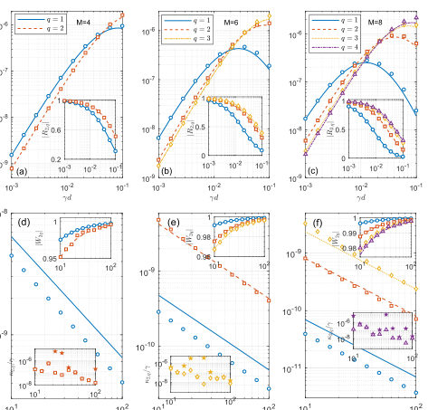
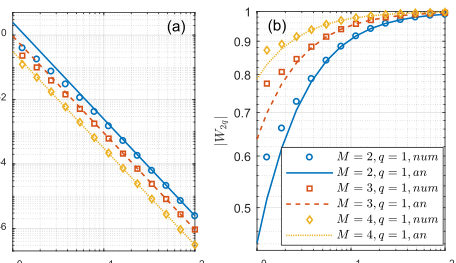
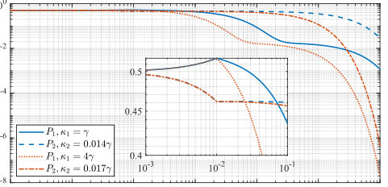
Summary. This theoretical paper proves a no-go theorem forbidding exact two-photon Bound States in the Continuum when photon-photon interactions are active. Crucially, it shows that while exact states are forbidden, long-lived quasi-bound states can be engineered by coupling nonlinear modes to continua. This opens pathways for controlling few-photon quantum dynamics beyond single-excitation limits.
Why it may be interesting. This work is highly relevant as it pushes the boundaries of controlling light-matter interactions in open quantum systems, demonstrating how nonlinearities can be used to engineer coherence and extend confinement times beyond what simple single-photon analysis predicts.
Main problem. The research investigates the existence of exact two-photon Bound States in the Continuum (BICs) when photon-photon interactions are present, and explores conditions for realizing long-lived quasi-bound states.
Main result. A no-go theorem proves that interaction-active two-photon BICs cannot exist under standard regularity conditions. However, long-lived quasi-bound states can be engineered, potentially achieving lifetimes much longer than single-photon excitations.
Method. The analysis relies on solving the BIC condition using Green's functions and pair bubble propagators ($\Pi(z)$), analyzing decay rates ($\kappa^2$) in weak and strong nonlinearity limits.
Model / system. The model consists of a single nonlinear bosonic mode coupled linearly to a noninteracting bosonic continuum (e.g., a waveguide). Specific examples include giant Kerr cavities coupled to waveguides.
Key observables. Two-photon decay rates ($\kappa_2$), the ratio $\kappa_1/\kappa_2$, and the spectral density properties of the continuum.
Important parameters / regimes. Nonlinearity strength ($U$), coupling point separation ($d$), detuning ($\delta_0$), and the nature of the local spectral density.
Assumptions / limitations. The no-go theorem assumes that the local one-photon spectral density vanishes only at isolated energies. Quasi-BIC analysis often focuses on limits like weak nonlinearity or large/small coupling separations.
Figures summary. Figure 1 schematically classifies two-photon BICs based on interaction activity. Figure 2 compares calculated decay rates ($\kappa^2$) for quasi-BICs in small-$d$ and large-$d$ regimes, while Figure 3 shows the scaling of these rates in the hard-core limit.
Paper structure. The paper establishes the Hamiltonian and BIC condition using Green's functions. It first proves the no-go theorem for interaction-active states. Subsequently, it analyzes the possibility of quasi-BICs by examining decay rate scaling ($\kappa^2$) across different coupling regimes (weak vs. strong nonlinearity) to demonstrate lifetime engineering.
Two-photon bound states in the continuum provide a stringent setting in which quantum interference must suppress radiative decay despite photon--photon interactions. Here, we prove a no-go theorem showing that a single nonlinear mode linearly coupled to a noninteracting bosonic continuum cannot support an interaction-active two-photon bound state in the continuum, provided the local spectral density vanishes only at isolated energies. Apart from this regularity condition, the result is independent of the continuum dispersion and the frequency-dependent coupling. Although such an exact bound state is forbidden, long-lived two-photon quasi-bound states remain possible. For a giant Kerr cavity nonlocally coupled to a waveguide, we derive the asymptotic scaling of the two-photon decay rate with the coupling-point separation from weak nonlinearity to the hard-core limit. We further identify a regime in which the two-photon resonance is substantially longer lived than the single-photon excitation. Our work establishes the limits of exact multiphoton confinement while opening a route to engineering long-lived interacting few-photon states.
Authors: Eva-Maria Graefe
Type: both · Category: other · PDF: https://arxiv.org/pdf/2608.16545v1
Analysis basis: full PDF text, analyzed in chunks
Topic relevance: correlated / nonlocal dissipation 3/5 · driven-dissipative phase transition 3/5 · methods for driven-dissipative 3/5 · analog quantum simulation 2/5 · non-equilibrium universality 2/5 · quantum measurements 1/5 · quantum optics experiment 1/5 · scars & prethermalization 1/5
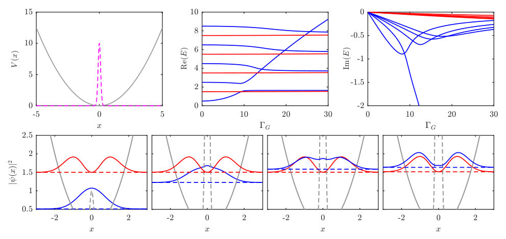
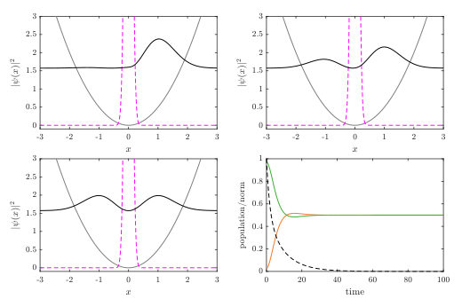
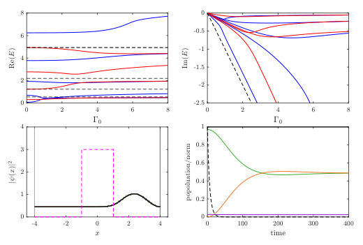
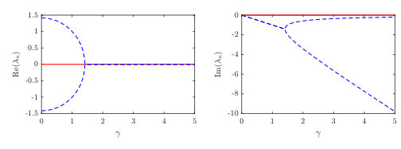
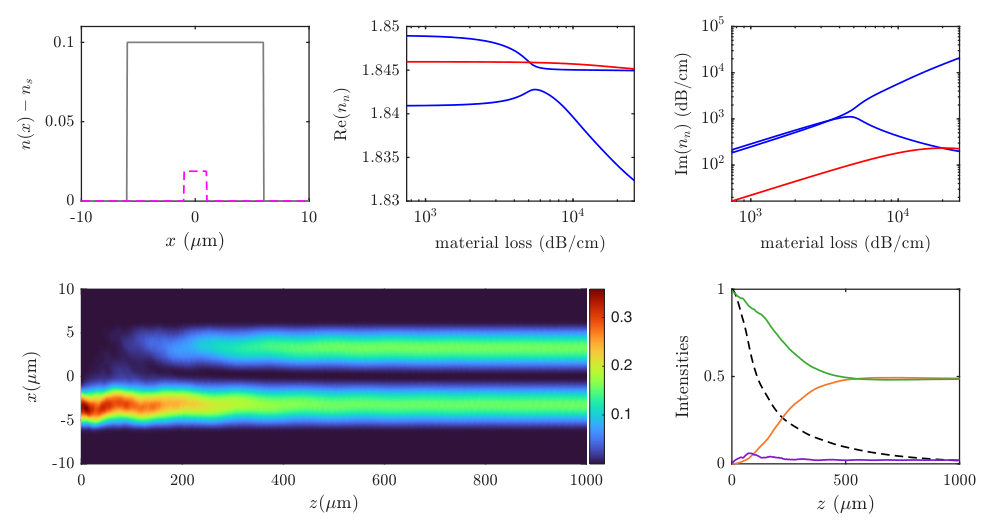
Summary. This paper explores non-Hermitian dynamical tunnelling caused by localized absorbing regions within a confining potential. It shows that this process leads to a slow relaxation towards equal population on both sides, contrasting sharply with the periodic oscillations seen in standard quantum tunneling. The findings are demonstrated using analytical models and proposed for experimental observation in optical waveguides.
Why it may be interesting. This work is highly relevant for AMO physics and quantum optics as it deals with open quantum systems dynamics, engineered dissipation, and non-Hermitian Hamiltonians, which are key areas in modern photonics and cavity QED.
Main problem. The paper investigates non-Hermitian dynamical tunnelling, which is the counterpart of standard quantum tunneling when the potential barrier is absorptive (imaginary) rather than real.
Main result. Instead of periodic oscillations seen with a real barrier, the system slowly relaxes towards an equal population on both sides separated by the imaginary absorbing region.
Method. The analysis uses numerical propagation methods for continuous potentials and derives an effective $3 imes 3$ matrix model to capture the core physics analytically.
Model / system. The models include a particle in a harmonic trap with Gaussian absorption, or an infinite square well with a rectangular imaginary barrier. The phenomenon is also mapped onto coupled waveguides for experimental realization.
Key observables. Population distribution over time (relaxation to equal population), eigenvalues/eigenvectors of the effective Hamiltonian, and spatial intensity profiles in optical waveguides.
Important parameters / regimes. Absorption strength ($\Gamma G$ or $\Gamma_0$), coupling constant ($v$), and waveguide parameters like wavelength ($\lambda$) and refractive index $n(x)$.
Assumptions / limitations. The analysis assumes natural units ($\hbar=m=\omega=1$) for the initial models, and the overall probability decay is noted due to the finite nature of the absorbing barrier.
Figures summary. Figures illustrate potential profiles and eigenvalue spectra vs. absorption strength; time evolution snapshots show relaxation to equal population in two halves of a trap or waveguide structure.
Paper structure. The paper progresses from analyzing simple continuous potentials (harmonic/infinite well) to deriving an effective $3 imes 3$ matrix model, culminating in the proposal and simulation of an experimental setup using optical waveguides.
We identify a non-Hermitian counterpart of dynamical tunnelling induced by a localised absorbing region in a symmetric confining potential. The absorbing region, described by an imaginary potential barrier, induces an effective double-well structure with a pair of long-lived states that have little population in the barrier. In contrast to the periodic tunnel oscillations through a real barrier, the system slowly evolves towards equal population of the two sides, while the absorbing region remains only weakly populated. We demonstrate this generic mechanism in two continuous potentials, and capture its essence analytically in a minimal $3\times 3$ matrix model. We propose a realistic optical waveguide setup for the experimental observation of the effect.
Authors: Michael V. Davidovich
Type: theory · Category: statistical mechanics · PDF: https://arxiv.org/pdf/2608.16567v1
Analysis basis: full PDF text, analyzed in chunks
Topic relevance: Keldysh / 2PI / non-Gaussian methods 3/5 · correlated / nonlocal dissipation 3/5 · Tavis-Cummings & cavity-many-emitter 2/5 · driven-dissipative phase transition 2/5 · methods for driven-dissipative 2/5 · analog quantum simulation 1/5 · non-equilibrium universality 1/5 · quantum measurements 1/5
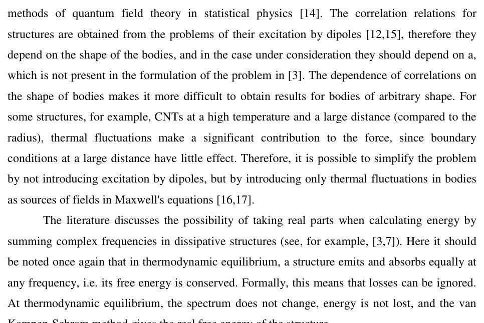
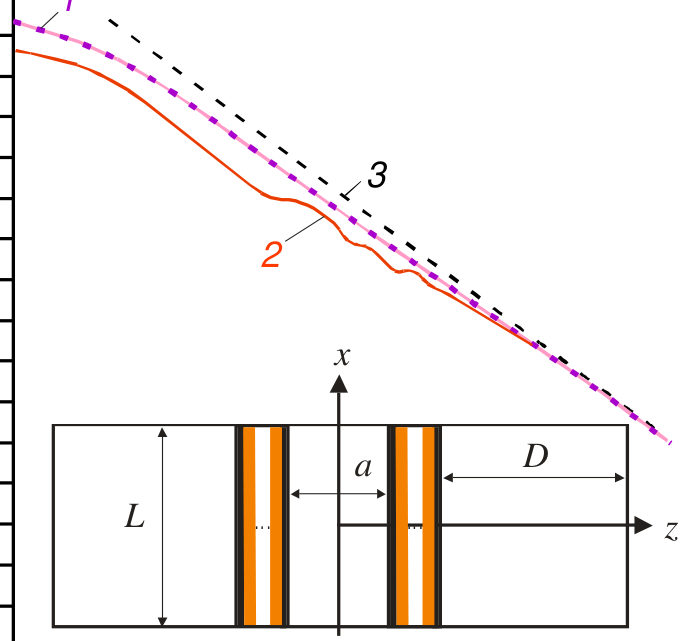
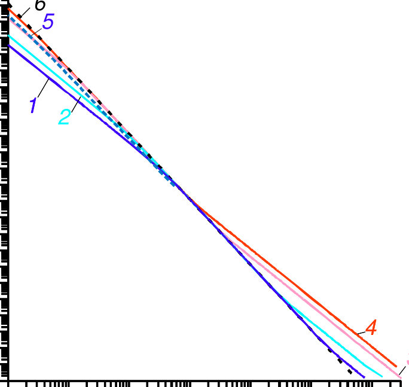
Summary. This paper develops a generalized formula for calculating the Casimir force between layered structures at finite temperatures by employing the van Kampen-Schram method. It critically analyzes discrepancies found when comparing this result to standard Lifshitz formulas, particularly highlighting that the contour integral contribution is significant at low temperatures. The work provides a more accurate theoretical framework for understanding thermal boundary interactions.
Why it may be interesting. While focused on electrodynamics, the rigorous treatment of finite-temperature correlations and boundary effects using advanced summation/integration techniques is highly relevant for understanding thermalization and dissipation in open quantum systems or cavity QED setups.
Main problem. The primary goal is deriving a precise formula for the Casimir force between plane-layered structures at finite temperature.
Main result. The van Kampen-Schram approach yields a generalized form that accounts for contributions missed by standard Lifshitz formulas, especially at low temperatures where the simple transformation to $T=0$ fails.
Method. The calculation employs advanced techniques involving summing over complex frequencies and transforming these sums into contour integrals along the imaginary frequency axis using methods like the residue theorem.
Model / system. The study models the interaction between two plane-layered structures, exemplified by metal plates. The analysis considers both zero vacuum fluctuations and thermal fluctuations.
Key observables. Casimir force (pressure) and free energy of the resonator.
Important parameters / regimes. Temperature ($T$), separation distance ($a$), dielectric properties ($\epsilon$, $\sigma$). Key regimes include high-temperature and low-temperature limits.
Assumptions / limitations. The analysis relies on generalizing existing formulas, noting that ideal conductivity assumptions can lead to infinities. The method aims to calculate the real free energy at thermodynamic equilibrium.
Figures summary. Figures compare calculated Casimir pressure versus separation distance for various temperatures and models (Drude vs. Lorentz corrections), contrasting results with the standard Casimir prediction.
Paper structure. The paper builds upon existing literature by applying the van Kampen-Schram method to derive a generalized formula, comparing this result against established Lifshitz formulas and analyzing its behavior in different temperature regimes.
Based on the van Kampen-Schram method, a formula for the Casimir force between two plane-layered structures is obtained, which includes the sum of the Matsubara frequencies and a contour integral. It is shown that the contour integral is not taken into account in the Lifshitz formula. Taking it into account gives a small contribution at high temperatures when the Lifshitz formula is approximately correct. However, at low temperatures, its contribution is significant, and the Lifshitz formula for the finite temperature does not transform into the Lifshitz formula at zero temperature. An example of interaction of metal plates is considered.1
Authors: Zheming Li, Lucas J. Fernández-Alcázar, Zin Lin, Tsampikos Kottos
Type: theory · Category: disordered systems and neural networks · PDF: https://arxiv.org/pdf/2608.16056v1
Analysis basis: full PDF text, analyzed in chunks
Topic relevance: driven-dissipative phase transition 3/5 · methods for driven-dissipative 3/5 · analog quantum simulation 2/5 · non-equilibrium universality 2/5 · quantum measurements 2/5 · Frenkel-Kontorova 1/5 · Keldysh / 2PI / non-Gaussian methods 1/5 · correlated / nonlocal dissipation 1/5
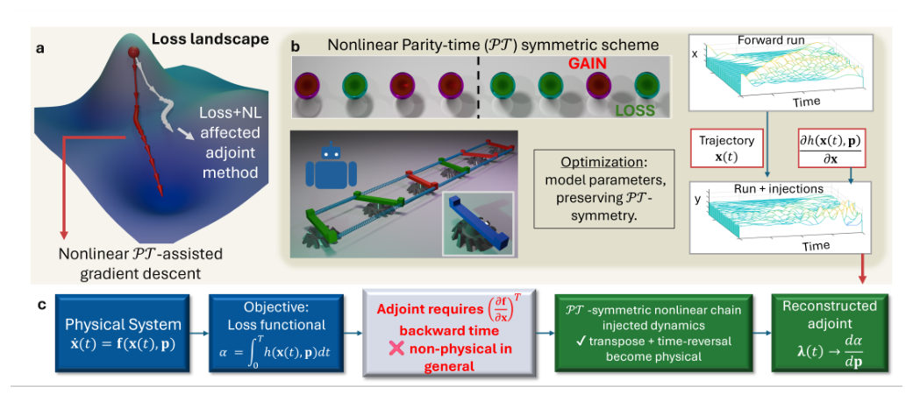
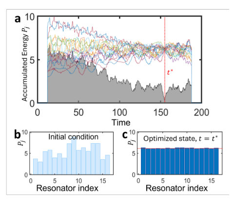
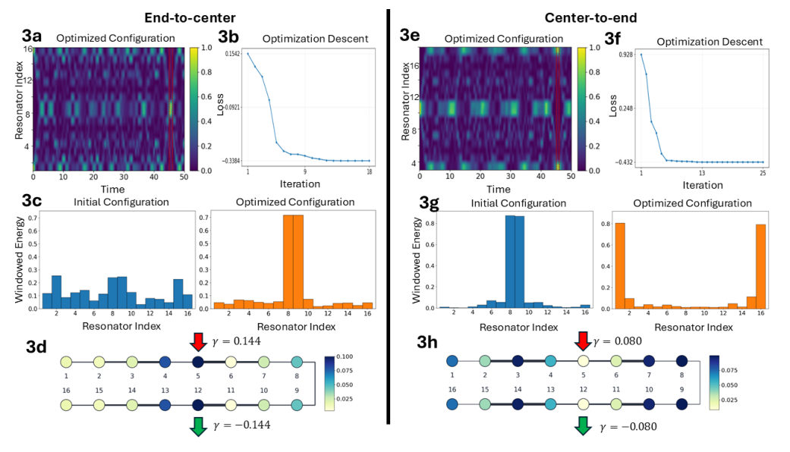
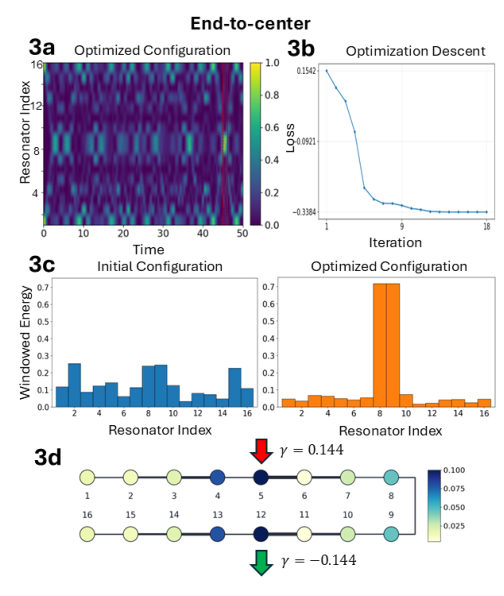
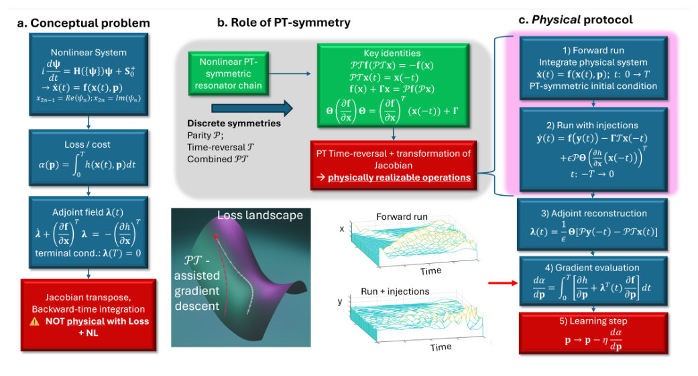
Summary. The paper develops a novel optimization technique for nonlinear quantum systems by leveraging Parity-Time ($ ext{PT}$) symmetry. It solves the fundamental problem of calculating gradients in non-Hermitian physics, which usually requires unphysical backward time evolution. By mapping this adjoint calculation onto an accessible forward-time protocol, it enables physical machines to self-optimize their parameters for desired spatio-temporal functions.
Why it may be interesting. This work provides a powerful theoretical framework for designing self-optimizing physical hardware (nonlinear machines) by turning an abstract mathematical requirement (adjoint gradient calculation) into a physically realizable measurement protocol using symmetry principles.
Main problem. The primary challenge is physically implementing adjoint-based gradient calculations for optimization in nonlinear, non-Hermitian physical systems.
Main result. PT symmetry provides the necessary structural identities to map the mathematically required backward-time adjoint dynamics onto an entirely forward-time evolution protocol using controlled injections.
Method. The authors exploit specific symmetries inherent to PT-symmetric Hamiltonians to bypass the need for explicit Jacobian transposition and time reversal in gradient computation.
Model / system. The system is a one-dimensional chain of coupled nonlinear resonators whose dynamics are governed by a non-Hermitian Hamiltonian exhibiting PT symmetry. The nonlinearity is Kerr-type, and the structure includes controlled gain/loss elements.
Key observables. Energy accumulation profiles ($P_j(t; p)$), spatial energy distribution uniformity ($\Delta P$), and engineered wave transport efficiency.
Important parameters / regimes. The system parameters must maintain PT symmetry (e.g., $\gamma_j = -\gamma_{2N-j+1}$) for the protocol to remain valid.
Assumptions / limitations. The method critically relies on the existence of and maintenance of PT symmetry throughout the optimization process; it is not generally applicable.
Figures summary. Figures conceptually illustrate the three stages of the PT-assisted in-situ adjoint method: forward evolution, mapping the adjoint problem via symmetry, and the final physical protocol for gradient evaluation.
Paper structure. The paper first establishes the theoretical difficulty of adjoint methods (requiring backward time/transposition). It then introduces nonlinear PT-symmetric systems as a solution space. The core contribution is deriving the forward-time evolution equation that mimics the adjoint field, leading to concrete applications in energy redistribution and wave steering.
Adjoint methods provide a powerful route for gradient-based optimization, but their physical implementation is obstructed in generic nonlinear systems because the adjoint dynamics requires backward-time evolution, Jacobian transposition, and terminal-value constraints. Here we show that nonlinear parity-time ($\mathcal{PT}$)-symmetric systems overcome this obstruction. Using a class of nonlinear non-Hermitian resonator networks, we establish symmetry relations that map the formal adjoint dynamics onto experimentally accessible forward-time evolutions supplemented by controlled injections. This construction enables exact in-situ evaluation of adjoint gradients without requiring explicit backward propagation or matrix transposition. We demonstrate the approach in nonlinear $\mathcal{PT}$-symmetric resonator chains, where the resulting optimization protocol autonomously discovers parameter configurations that realize prescribed spatio-temporal functionalities, including uniform energy redistribution and targeted wave transport at predefined time windows. Our results identify $\mathcal{PT}$ symmetry as a resource for implementing computational sensitivities within physical systems and establish a route toward self-optimizing nonlinear machines.
Authors: M. Tahir Naseem
Type: theory · Category: statistical mechanics · PDF: https://arxiv.org/pdf/2608.15899v1
Analysis basis: full PDF text, analyzed in chunks
Topic relevance: driven-dissipative phase transition 3/5 · methods for driven-dissipative 3/5 · Keldysh / 2PI / non-Gaussian methods 2/5 · non-equilibrium universality 2/5 · quantum measurements 2/5 · correlated / nonlocal dissipation 1/5 · scars & prethermalization 1/5
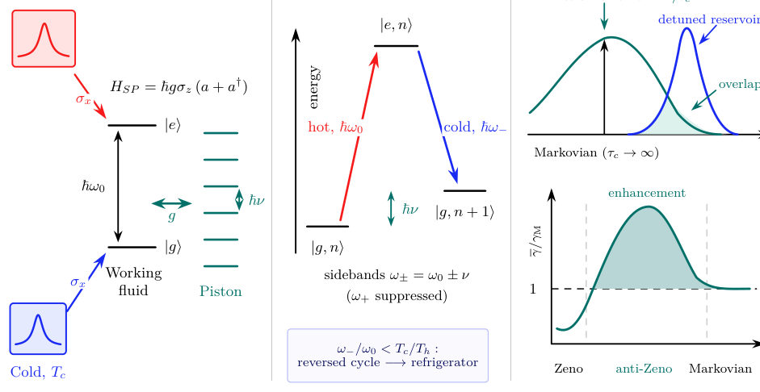
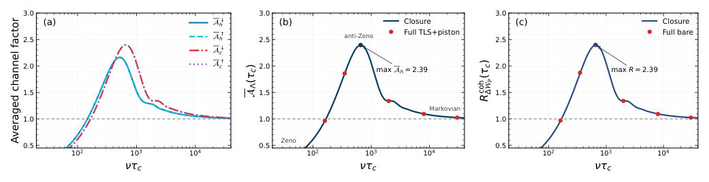
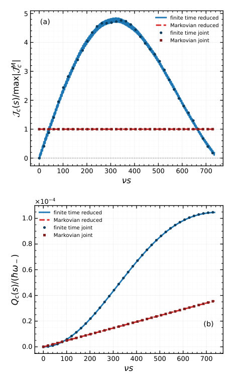
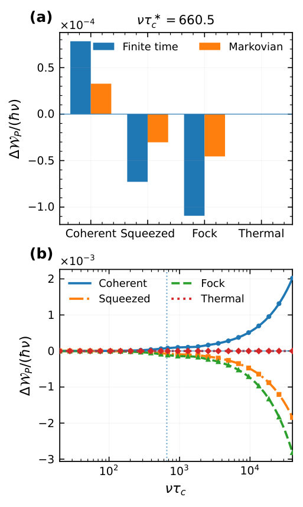
Summary. This paper analyzes an autonomous thermal machine driven by a quantized piston instead of an external field. By utilizing the anti-Zeno effect within a finite-time framework, the authors demonstrate that the engine's ability to generate useful work (ergotropy) is enhanced beyond classical predictions. This establishes finite-time reservoir sampling as a novel mechanism for improving quantum heat engine and refrigerator performance.
Why it may be interesting. This work directly tackles non-equilibrium quantum thermodynamics by extending known effects (like Zeno/Anti-Zeno) into complex mechanical systems, providing a mechanism for enhancing energy conversion efficiency in fundamental quantum engines.
Main problem. The study investigates whether the quantum advantage provided by the anti-Zeno effect persists when a classical drive in a thermal machine is replaced by a quantized piston, enabling autonomous operation.
Main result. Finite-time reservoir sampling enhances ergotropy generation in the engine mode beyond Markovian limits, and this mechanism can be reversed to achieve enhanced quantum refrigeration without external modulation.
Method. The authors derive and analyze a finite-time master equation for the system dynamics, comparing results across Zeno, anti-Zeno, and Markovian regimes.
Model / system. The model is an autonomous thermal machine comprising a two-level working fluid coupled to a quantized harmonic piston and interacting with two spectrally separated thermal reservoirs (hot and cold).
Key observables. Ergotropy (useful work content), energy balance equations ($\dot{E}_{ ext{TLS}} + \dot{E}_P = \dot{Q}_h + \dot{Q}_c$), and channel-energy ratios.
Important parameters / regimes. Coupling time ($ au_c$), reservoir temperatures ($T_h, T_c$), and the characteristic timescales defining the operational regimes ($\Delta_{sb}^{-1} \ll au_c \lesssim au_B$).
Assumptions / limitations. The analysis is performed without external modulation of the system parameters.
Figures summary. Figure 1 schematically illustrates the setup, showing the TLS coupled to the piston and reservoirs, and depicts the anti-Zeno mechanism enhancing rates compared to Markovian sampling.
Paper structure. The paper establishes the physical model (Hamiltonians), derives the finite-time master equation using TCL2 methods, analyzes energy conservation for both engine and refrigerator cycles, and compares the resulting performance metrics (ergotropy) against long-time Markovian limits.
Anti-Zeno enhancement of quantum heat machines has been established for working fluids driven by an external classical field, but whether the same quantum advantage survives when a quantized piston replaces the classical drive has remained open. Here we study an autonomous thermal machine in which a two-level working fluid is coupled to a quantized harmonic piston and to two spectrally separated reservoirs, without external modulation. We derive a finite-time master equation for the resulting carrier and sideband channels, whose rates interpolate between the Zeno, anti-Zeno, and Markovian regimes as the coupling time is varied. For an initially coherent piston, the machine charges the piston and generates more ergotropy than the Markovian reference in the anti-Zeno window. Reversing the same retained channels turns the device into a finite-resource refrigerator with enhanced cooling. The anti-Zeno effect therefore increases the rate of operation while leaving the underlying carrier and sideband energy ratios unchanged. These channel ratios remain consistent with the usual Carnot bounds over the operating regimes considered here. Our results establish finite-time reservoir sampling as a mechanism for enhancing autonomous thermal-machine operation with a quantized piston, without external modulation.
Authors: Qing-Dong Jiang
Type: theory · Category: other · PDF: https://arxiv.org/pdf/2608.14784v1
Analysis basis: full PDF text, analyzed in chunks
Topic relevance: analog quantum simulation 3/5 · Keldysh / 2PI / non-Gaussian methods 2/5 · Tavis-Cummings & cavity-many-emitter 2/5 · driven-dissipative phase transition 2/5 · methods for driven-dissipative 2/5 · correlated / nonlocal dissipation 1/5 · interference shaping light 1/5 · quantum measurements 1/5
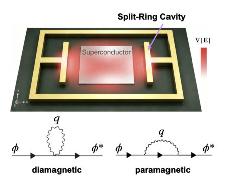
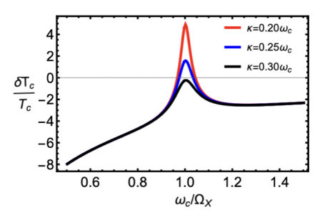
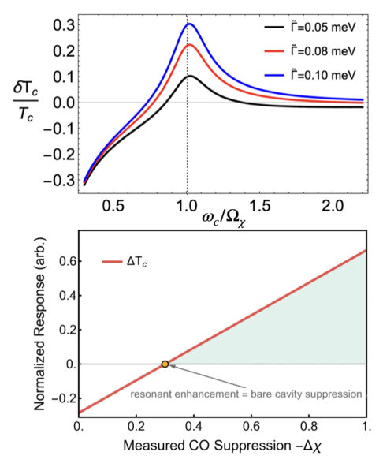
Summary. This theoretical paper investigates how coupling superconductors to electromagnetic cavities affects their critical temperature ($T_c$). It first proves that simple vacuum fluctuations suppress superconductivity (a no-go theorem). To achieve enhancement, the authors show that one must introduce additional coupled material modes—either through a collective excitation or by suppressing a competing order—making it a guide for designing superconducting devices using cavity QED principles.
Why it may be interesting. This work directly bridges superconducting physics with cavity quantum electrodynamics (Cavity QED) by treating vacuum fluctuations as a tunable parameter. The identification of necessary additional coupled modes provides concrete design principles for enhancing superconductivity using optical cavities, which is highly relevant to AMO/Quantum Optics.
Main problem. The primary question is determining the conditions under which vacuum electromagnetic fluctuations, mediated by a cavity, can enhance superconductivity (increase $T_c$).
Main result. A no-go theorem proves that minimal coupling to passive cavity modes suppresses superconductivity; enhancement requires introducing additional coupled material degrees of freedom.
Method. The authors derive the effective superconducting free energy by integrating out the quantized cavity mode, leading to corrections involving diamagnetic and paramagnetic terms.
Model / system. The system is a bulk superconductor described by Ginzburg-Landau theory ($\phi$), minimally coupled to quantized cavity modes ($A$). Enhancement mechanisms involve coupling to additional collective excitations or competing order parameters ($\chi$).
Key observables. Superconducting transition temperature shift ($\delta T_c$); the balance between diamagnetic and paramagnetic energy corrections.
Important parameters / regimes. Cavity frequency ($\omega_c$), material mode frequencies ($\Omega_X$), and the coupling strength of the additional degrees of freedom.
Assumptions / limitations. The initial analysis assumes minimal coupling to a passive cavity. Circumvention requires introducing additional coupled modes (collective or competing order).
Figures summary. Figure 1 illustrates renormalization diagrams; Figure 2 shows $\delta T_c$ dependence on cavity frequency, peaking at resonance for the collective-mode route; Figure 3 shows enhancement/suppression for the competing order.
Paper structure. The paper first establishes the no-go theorem using minimal coupling. It then systematically explores two routes beyond this constraint: the collective-mode route and the competing-order route, showing how each can lead to enhanced $T_c$ near resonance.
Recent experiments reporting cavity-vacuum-modified superconductivity raise a fundamental question: under what conditions can vacuum electromagnetic fluctuations increase a superconducting transition temperature? Starting from a Ginzburg--Landau theory minimally coupled to a quantized cavity mode, we derive the cavity-induced renormalization of the superconducting free energy. This correction comprises a positive diamagnetic contribution and a negative paramagnetic exchange contribution. We prove that, in a passive cavity, the latter cannot exceed the former, establishing a no-go theorem: within minimal cavity electrodynamics, vacuum fluctuations suppress, rather than enhance, superconductivity. We then identify two routes beyond this constraint, both involving additional collective degrees of freedom. In the collective-mode route, a cavity-active excitation amplifies the attractive paramagnetic contribution. In the competing-order route, the cavity weakens an order that competes with superconductivity, thereby indirectly enhancing superconductivity. Together, these results turn the no-go theorem into a practical design principle: cavity superconductivity enhancement requires an additional cavity-coupled material mode that either strengthens paramagnetic exchange or suppresses a competing order.
Authors: Loran Ts. Adzhemyan, Diana A. Davletbaeva, Daniil A. Evdokimov, Mikhail V. Kompaniets
Type: theory · Category: statistical mechanics · PDF: https://arxiv.org/pdf/2608.15887v1
Analysis basis: full PDF text, analyzed in chunks
Topic relevance: Keldysh / 2PI / non-Gaussian methods 3/5 · non-equilibrium universality 3/5 · driven-dissipative phase transition 2/5 · methods for driven-dissipative 2/5 · analog quantum simulation 1/5 · correlated / nonlocal dissipation 1/5 · scars & prethermalization 1/5
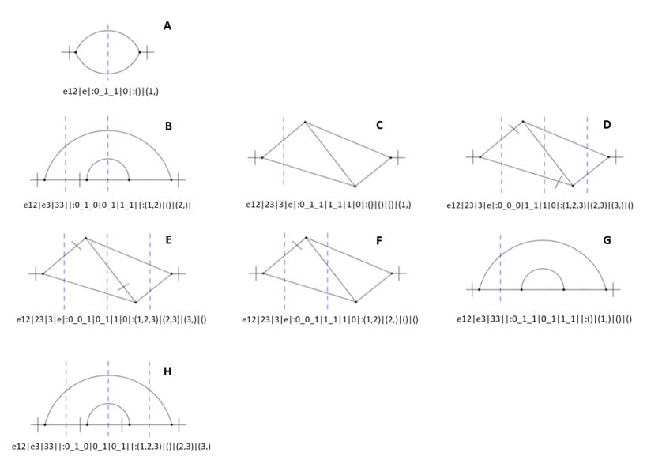
Summary. This paper calculates the dynamic critical exponent for the Yang–Lee edge singularity using high-order perturbative renormalization group theory. The methodology is highly technical, involving diagram reduction and multi-loop integration techniques like Sector Decomposition. It provides a robust estimate of $z$ by resumming the perturbative series to three loops, confirming consistency with established theoretical benchmarks.
Why it may be interesting. While focused on critical dynamics rather than AMO systems directly, the sophisticated use of RG theory, diagrammatic techniques, and advanced summation methods (hyperlogarithms) represents state-of-the-art theoretical physics applicable to analyzing non-equilibrium quantum many-body systems.
Main problem. The primary goal is computing the dynamic critical exponent ($z$) associated with the Yang–Lee edge singularity (YLES) in relaxational dynamics.
Main result. The authors obtain a three-loop estimate for $z$ using advanced resummation techniques, finding results consistent with previous perturbative and functional renormalization group calculations across various spatial dimensions.
Method. The calculation employs perturbative Renormalization Group (RG) methods, combining diagram reduction, analytic two-loop evaluation via parametric integration with hyperlogarithms, and numerical three-loop integral evaluation using Sector Decomposition.
Model / system. The study models critical dynamics using a scalar field theory exhibiting an imaginary coupling constant ($i g_0$), described by a Langevin-type formulation (Model A in Hohenberg-Halperin classification).
Key observables. Dynamic critical exponent ($z$), renormalization constants ($Z_i$), and the running coupling constant $u$.
Important parameters / regimes. Spatial dimensions ($d$), loop order (up to three loops), and tuning parameters for resummation techniques.
Assumptions / limitations. The analysis assumes that an imaginary fixed point can control real infrared asymptotic scaling behavior, and it relies on advanced mathematical tools like hyperlogarithms and sector decomposition for convergence.
Figures summary. Figure 1 illustrates the indices of one- and two-loop time versions after diagram reduction; Table II summarizes the final resummed estimates for $z$ across dimensions $d=1$ to $d=5$.
Paper structure. The paper systematically develops the formalism by first addressing the complexity of dynamic diagrams, applying advanced renormalization techniques (BPHZ-like schemes), and finally presenting the results through multi-loop calculations followed by rigorous resummation using Padé and PBL methods.
We compute the dynamic critical exponent $z$ of the Yang--Lee edge singularity in relaxational dynamics using perturbative renormalization-group methods to the three-loop order. The calculation combines diagram reduction, analytic two-loop evaluation via parametric integration with hyperlogarithms, and numerical evaluation of three-loop integrals using the Sector Decomposition method. The perturbative series obtained is resummed using Padé and Padé-Borel-Leroy methods to produce estimates of $z$ in various spatial dimensions. The resulting values are consistent with previous perturbative and functional renormalization-group calculations.
Authors: Michael V. Davidovich
Type: theory · Category: other · PDF: https://arxiv.org/pdf/2608.16619v1
Analysis basis: full PDF text, analyzed in chunks
Topic relevance: Keldysh / 2PI / non-Gaussian methods 3/5 · driven-dissipative phase transition 2/5 · methods for driven-dissipative 2/5 · non-equilibrium universality 2/5 · analog quantum simulation 1/5 · correlated / nonlocal dissipation 1/5 · quantum measurements 1/5 · scars & prethermalization 1/5
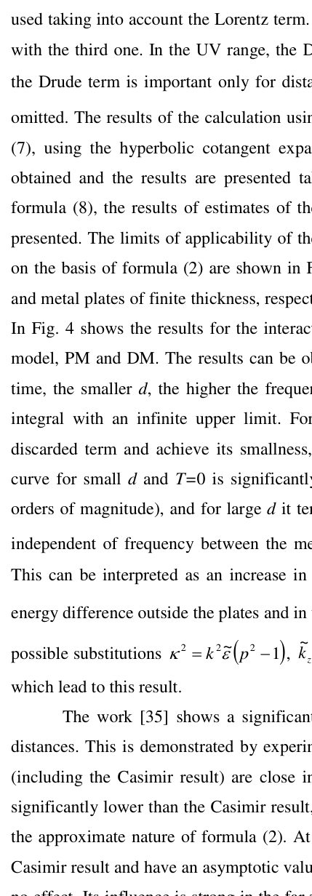
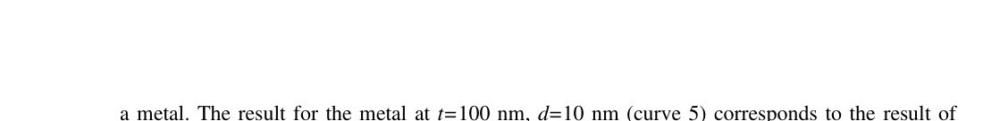
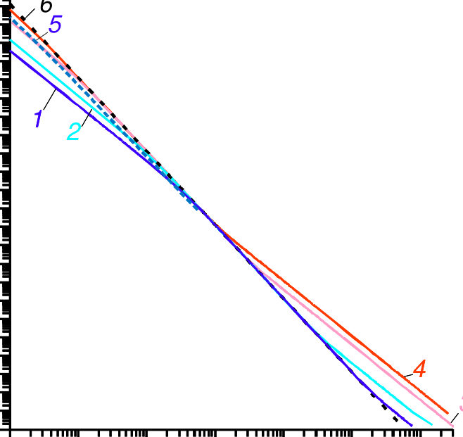
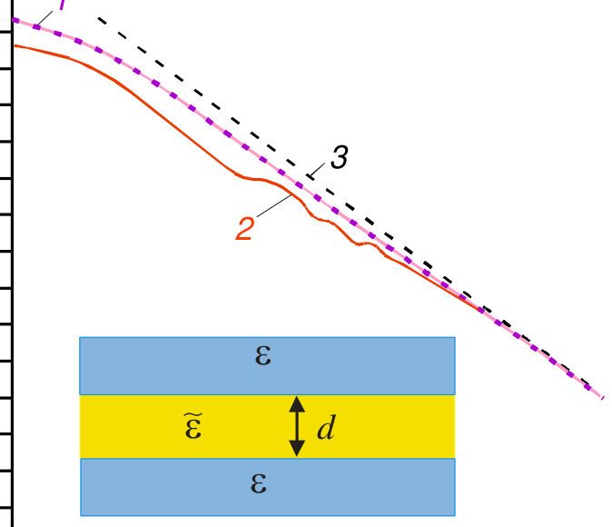
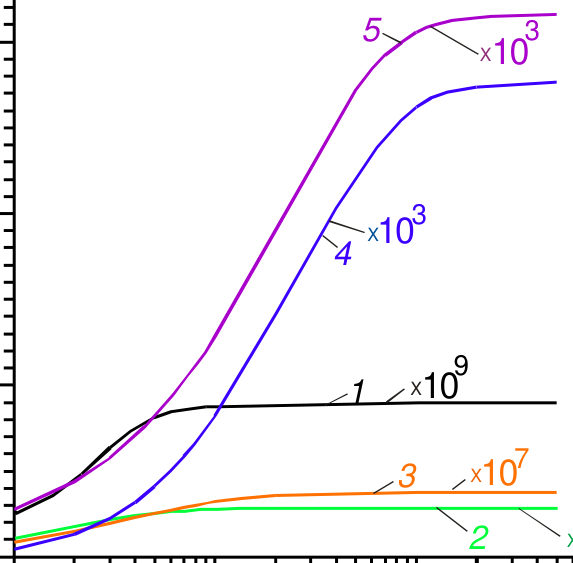
Summary. This theoretical paper calculates the Casimir force between real metal plates by incorporating finite temperature and conductivity effects using advanced dielectric models. The authors critically analyze existing literature formulas, demonstrating mathematical inconsistencies that necessitate including dissipation terms for physically accurate results. It provides a detailed comparison of various physical regimes and material approximations.
Why it may be interesting. While focused on electrodynamics, the rigorous treatment of boundary conditions, dissipation ($\epsilon''$), and temperature corrections to vacuum forces touches upon open quantum system dynamics where environmental coupling is crucial for energy renormalization.
Main problem. The paper investigates corrections to the Casimir force between two real metallic plates, accounting for finite temperature and conductivity effects.
Main result. The authors show that several published formulas for the correction terms are inconsistent due to mathematical divergences, requiring the inclusion of dissipation ($\propto \epsilon''(\omega)$) in the frequency integral for consistency.
Method. The analysis relies on the Lifshitz formula, involving complex contour integration over frequency and wave vector, comparing results derived from various dielectric models (Drude, Plasma, etc.).
Model / system. The system is two parallel metallic plates separated by a distance $d$. The material response is modeled using several dielectric functions ($\epsilon(\omega)$), including the Drude model, which captures frequency-dependent conductivity and temperature effects.
Key observables. Casimir pressure ($P$) and force density ($F$), showing dependence on separation distance ($d$) and temperature ($T$).
Important parameters / regimes. Separation distance $d$, Temperature $T$ (e.g., 5 K to 900 K), plasma frequency ($\omega_p$), collision frequency ($\omega_c$).
Assumptions / limitations. The analysis critically examines the mathematical consistency of existing literature formulas, particularly regarding how dissipation terms are handled in the integration process.
Figures summary. Figures illustrate the external Casimir pressure $P$ for various conditions: dependence on separation distance ($d$) and temperature ($T$), and comparison between different material models (Plasma vs. Drude-Smith).
Paper structure. The paper progresses by establishing the theoretical framework using the Lifshitz formula, comparing results from multiple dielectric models across different physical regimes (near/far zones), and rigorously analyzing mathematical inconsistencies in prior literature.
The corrections to Casimir pressure (force) on two plates of real metal described by the dielectric constant of the Drude, Drude-Lorentz, Drude-Smith and plasma models at the finite temperature and conductivity are considered. We consider the contour integral lost in the Lifshitz formula and discuss inconsistencies for the corrections to the Casimir force given in the literature. Numerical and analytical results in the near and far zones are presented. The two first-order correction obtained due to the actual dielectric constant of the metal coincided with the literature data.
Authors: Pritam Chattopadhyay
Type: theory · Category: statistical mechanics · PDF: https://arxiv.org/pdf/2608.16254v1
Analysis basis: full PDF text, analyzed in chunks
Topic relevance: driven-dissipative phase transition 3/5 · methods for driven-dissipative 3/5 · Keldysh / 2PI / non-Gaussian methods 2/5 · non-equilibrium universality 2/5 · correlated / nonlocal dissipation 1/5 · quantum measurements 1/5 · scars & prethermalization 1/5
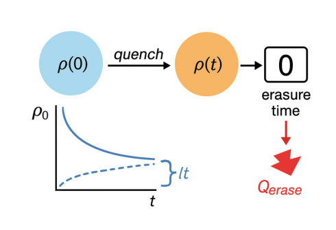
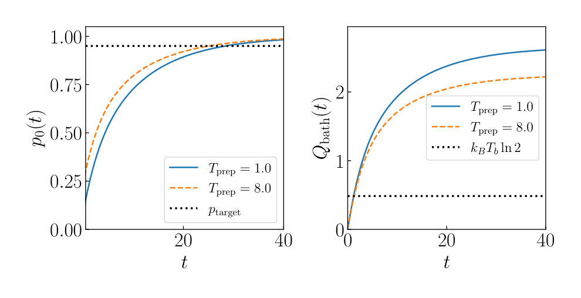
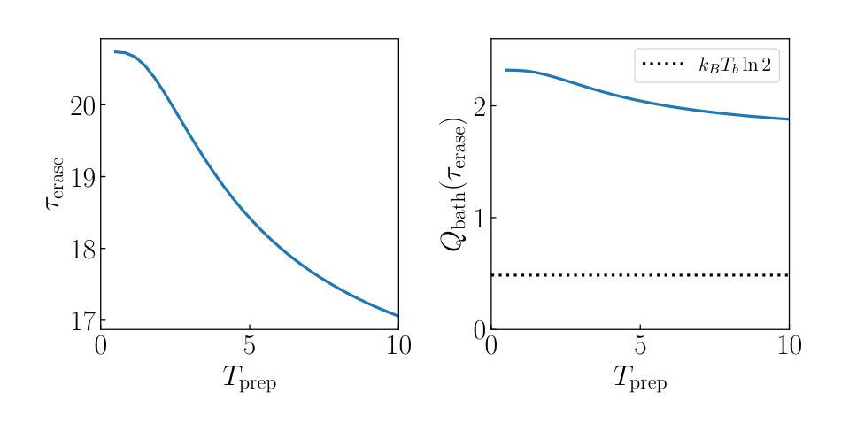
Summary. The paper explores how preparing a quantum memory in a non-equilibrium, hot state can accelerate the erasure process and reduce the minimum heat dissipated compared to standard cold preparations. It achieves this by leveraging the spectral properties of the system's Liouvillian evolution, establishing a quantifiable 'Mpemba–Landauer condition' for such speedups.
Why it may be interesting. This work directly connects non-equilibrium thermodynamics (Mpemba effect) to fundamental quantum information processing limits (Landauer principle), providing concrete physical mechanisms for improving computational efficiency in open quantum systems.
Main problem. The research investigates how non-equilibrium quantum initial states can reduce the finite-time thermodynamic cost associated with Landauer erasure.
Main result. A modified Landauer bound is derived showing excess dissipation scales quadratically with the slow mode projection, and a 'Mpemba–Landauer condition' proves that hotter states can erase faster and dissipate less heat than colder ones without violating Landauer's principle.
Method. The analysis utilizes Liouvillian spectral theory to decompose time evolution into relaxation modes, focusing on the single slowest mode approximation for thermodynamic cost calculations.
Model / system. The system is a general finite-dimensional quantum memory coupled to a thermal reservoir via a Davies generator. Illustrations use a minimal qutrit model, and practical applications are suggested for superconducting circuits or trapped ions.
Key observables. Dissipated heat into the bath (Q_bath), operational erasure time ($ au_{erase}$), and the overlap coefficients ($c_j$) quantifying initial state relaxation modes.
Important parameters / regimes. Preparation temperature ($T_{prep}$), fidelity target ($p_{target}$), and the spectral gap defined by the slowest Liouvillian eigenvalue ($\lambda_1$).
Assumptions / limitations. The analysis relies heavily on controlled approximations, specifically assuming that higher-order Liouvillian modes decay much faster than the single slowest mode.
Figures summary. Figures illustrate the general setup of Mpemba-enhanced erasure, showing population dynamics ($p_0(t)$) for hot vs. cold preparations, and plotting $ au_{erase}$ and $Q_{bath}( au_{erase})$ versus preparation temperature to confirm speedup/cooling effects.
Paper structure. The paper builds from establishing the general Liouvillian framework (eigenmodes, spectral decomposition), deriving the modified Landauer bound using slow-mode approximations, proving the Mpemba–Landauer condition via comparison of hot vs. cold protocols, and concluding with practical control knobs for implementation.
We investigate how nonequilibrium quantum initial states can reduce the finite-time thermodynamic cost of Landauer erasure. Considering a general finite-dimensional quantum memory coupled to a thermal reservoir via a Davies generator, we show that the dissipated heat at a fixed operational erasure fidelity is largely controlled by the overlap of the initial state with the slowest Liouvillian relaxation mode. We derive a modified finite-time Landauer bound in which the excess dissipation above the quasistatic limit scales quadratically with this slow mode projection, and we prove a sufficient Mpemba Landauer condition under which a hotter state can erase faster and dissipate less heat than a colder preparation, without violating Landauer's principle. A minimal qutrit model illustrates these quantum Mpemba speedups and reveals broad parameter regimes where coherence and Hamiltonian-induced modes conspire to suppress finite-time entropy production. We further identify practical control knobs, including temperature tuning, coherence engineering, and Hamiltonian shaping of Liouvillian spectra, which enable Mpemba-enhanced erasure to be directly tested on platforms such as superconducting circuits, trapped ions, semiconductor quantum dots, and solid-state spins.
Authors: Shuai Zeng
Type: theory · Category: statistical mechanics · PDF: https://arxiv.org/pdf/2608.15661v1
Analysis basis: full PDF text, analyzed in chunks
Topic relevance: Keldysh / 2PI / non-Gaussian methods 3/5 · analog quantum simulation 2/5 · driven-dissipative phase transition 2/5 · methods for driven-dissipative 2/5 · non-equilibrium universality 2/5 · correlated / nonlocal dissipation 1/5 · scars & prethermalization 1/5
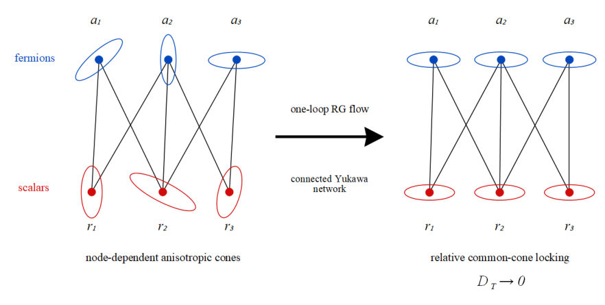
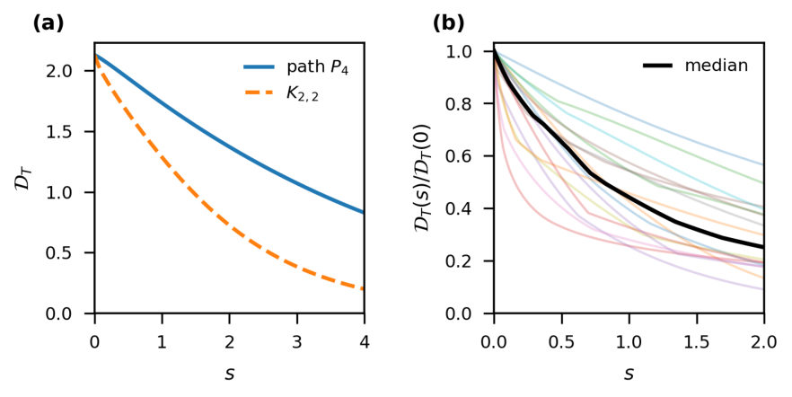
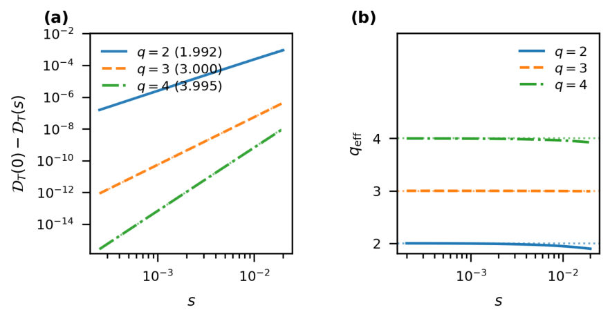
Summary. This theoretical paper analyzes how local Yukawa interactions on a network can force disparate physical fields into sharing a single common infrared propagation cone. By deriving nonlinear matrix flow equations, the authors prove that renormalization group dynamics drive this geometric locking across the entire connected system. This demonstrates that global structure can emerge from local interactions via RG evolution.
Why it may be interesting. While focused on field theory, the use of RG flow dynamics, geometric invariants (Thompson diameter), and convergence proofs for coupled systems provides powerful mathematical tools applicable to analyzing complex many-body relaxation or synchronization in quantum systems.
Main problem. The study investigates whether local Yukawa interactions on a finite graph can force different field species to share a single common infrared spatial propagation cone, even when the interactions driving this locking are marginally irrelevant.
Main result. Renormalization-group dynamics can collectively select and enforce a common relative propagation geometry (common-cone locking) across all interacting sectors in the network.
Method. The analysis involves deriving one-loop nonlinear matrix flow equations for the kinetic matrices, utilizing concepts from differential geometry like the Thompson diameter to quantify geometric mismatch.
Model / system. The model is a multichannel Dirac–scalar Yukawa theory defined on a finite bipartite graph. Fields possess anisotropic propagation geometries described by positive-definite spatial kinetic matrices.
Key observables. Thompson diameter (DT), which quantifies the mismatch in relative propagation geometry; the evolution of the relative matrix R.
Important parameters / regimes. One-loop approximation, weak coupling regime, finite graph connectivity, and graph distance controlling onset order.
Assumptions / limitations. The analysis assumes positive-definite spatial kinetic matrices and requires persistent normalized edge activity to achieve full contraction.
Figures summary. Figures conceptually illustrate the transition from initial anisotropic cones to a common-cone locked state driven by RG flow, with connectivity determining the asymptotic fate.
Paper structure. The paper develops the one-loop nonlinear matrix flow equations for relative kinetic matrices. It proves that this flow leads to global nonexpansion and, under persistent activity, a finite-window contraction of the Thompson diameter, demonstrating common-cone locking.
Different field species can begin with finite anisotropic propagation geometries whose principal axes need not coincide. We ask whether local Yukawa interactions on a finite graph can nevertheless generate one common infrared spatial cone, even when the interactions that drive the locking become marginally irrelevant. Retaining the full finite mismatch between positive-definite spatial kinetic matrices, we derive the one-loop nonlinear matrix flow and show that its Thompson diameter is globally nonexpansive. On a connected graph, persistent normalized edge activity upgrades this to a uniform finite-window contraction, so all interacting sectors asymptotically share one relative propagation geometry. An explicit two-channel Pauli-Dirac Yukawa-quartic completion realizes the persistence conditions on an open weak-coupling set of finite-mismatch initial data. In four dimensions the Yukawa couplings vanish in the infrared, yet their accumulated interaction time diverges, leaving a Gaussian endpoint with a common spatial cone. For a controlled two-plateau extremal class, graph distance also fixes the first nonzero short-time order of the diameter decrease. Thus a common cone can be collectively selected by renormalization-group dynamics rather than imposed as a microscopic common structure.
Authors: Shaoxin Yuan, Bin Wu, Mingyong Jing, Chaoyang Hu, Yan Peng, Tingting Li, Xingya Li, Wenguang Yang, Junyao Xie, Zongkai Liu, Hao Zhang, Linjie Zhang, Liantuan Xiao, Suotang Jia
Type: both · Category: other · PDF: https://arxiv.org/pdf/2608.15130v1
Analysis basis: full PDF text, analyzed in chunks
Topic relevance: Keldysh / 2PI / non-Gaussian methods 3/5 · methods for driven-dissipative 3/5 · correlated / nonlocal dissipation 2/5 · quantum measurements 2/5 · driven-dissipative phase transition 1/5 · interference shaping light 1/5 · quantum optics experiment 1/5
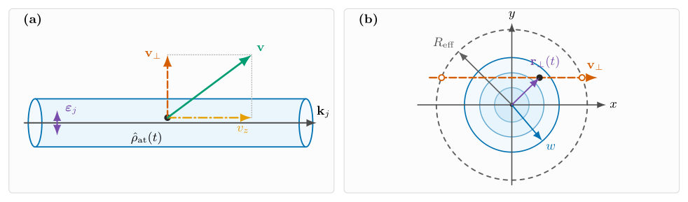
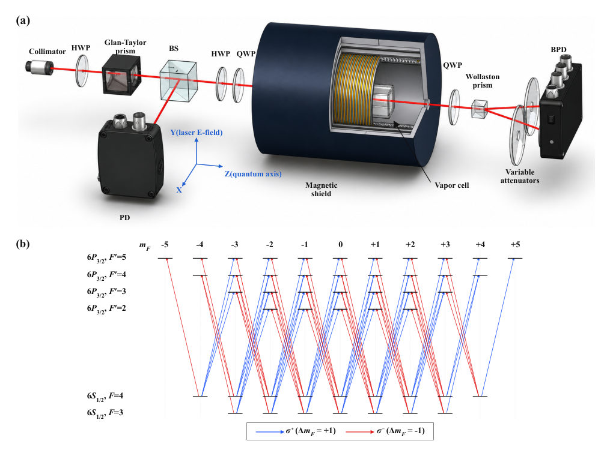
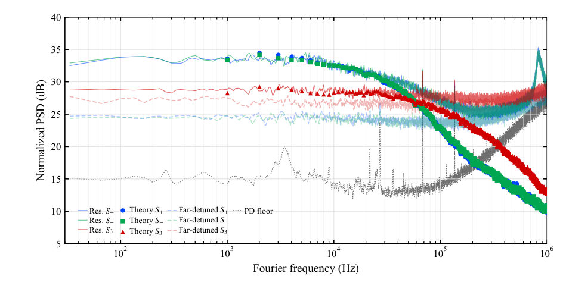
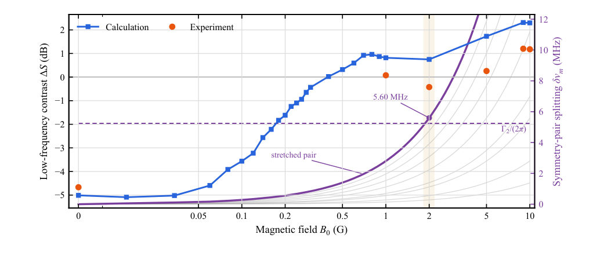
Summary. The authors develop a stochastic Liouville-transport theory to accurately model light-atom interaction noise in thermal atomic vapors. By jointly treating internal state evolution, finite-mode motion, and boundary renewal, the theory explains observed spectral features in Cs D2 spectra. This framework is crucial for advancing quantum sensing by providing a comprehensive understanding of noise sources beyond simple approximations.
Why it may be interesting. This work provides a rigorous, unified theoretical framework for noise characterization in quantum sensors operating in realistic thermal environments, explicitly coupling spatial dynamics (transport) with internal quantum coherence (Liouville evolution).
Main problem. Atom-light interaction noise limits quantum sensing in thermal atomic vapors, and existing theories fail to account for the coupled effects of internal dynamics, motion, and renewal.
Main result. The theory successfully models how ballistic motion causes common-mode noise, while boundary renewal introduces differential fluctuations; it also reproduces field-dependent spectral changes observed in Cs D2 spectra.
Method. A general stochastic Liouville-transport theory is developed to model the open quantum dynamics of atoms moving through a sensing region.
Model / system. The system uses thermal atomic vapors (Cs D2) and models the evolution using an operator-valued phase-space density governed by a master equation incorporating Hamiltonian terms for hyperfine-Zeeman structure, detuning, and coupling, alongside transport and renewal terms.
Key observables. Polarization-resolved Power Spectral Densities (PSDs), specifically $S_+$, $S_-$, and the balanced difference $S_3(f)$, and the common-mode suppression factor $\Delta S$.
Important parameters / regimes. Noise frequency regime ($\approx 100$ kHz threshold), longitudinal magnetic field strength ($B_0$), and atomic constants related to hyperfine structure.
Assumptions / limitations. The theory adopts a collisionless, recoil-free ballistic limit for transport and utilizes the Rotating-Wave Approximation (RWA) for Hamiltonian evaluation.
Figures summary. Figures illustrate the optical setup for $\sigma^+$ and $\sigma^-$ detection, the hyperfine manifolds retained in the model, and plots showing the measured one-sided PSDs ($S_+$, $S_-$, $S_3$) across different magnetic fields.
Paper structure. The paper introduces the coupled stochastic Liouville theory, details the Hamiltonian and master equation governing dynamics (including transport/renewal), presents analysis of key observables like PSDs, and validates the model by reproducing experimental measurements for Cs D2 spectra under varying magnetic fields.
Atom-light interaction noise can limit thermal-vapor sensing. Existing theories often treat internal-state dynamics, finite-mode atomic motion, and stochastic renewal separately, obscuring their coupled contributions to measured noise. We develop a general stochastic Liouville-transport theory, tested against polarization-resolved resonant Cs D$_2$ spectra. Joint experiment-theory analysis identifies atom-light noise below approximately 100 kHz as transit-dominated. Ballistic motion through the finite Gaussian mode modulates both the coupling-weighted effective atom number and trajectory-dependent Rabi coupling, producing predominantly common-mode noise. Boundary renewal introduces atoms with independently sampled ground-state sublevels, generating differential population fluctuations with opposite effects on the circular channels. Under an applied longitudinal magnetic field, experiment and theory show the same qualitative nonmonotonic change in common-mode suppression, supporting Zeeman redistribution of the channel responses. The framework can analyze noise in other thermal-atom sensors, including Rydberg-atom electric-field measurements.
Authors: M. N. Jipdi, C. Avomo Mba, A. B. Moubissi, L. C. Fai, M. E. Ateuafack
Type: theory · Category: quantum information and computing · PDF: https://arxiv.org/pdf/2608.15829v1
Analysis basis: full PDF text, analyzed in chunks
Topic relevance: driven-dissipative phase transition 3/5 · methods for driven-dissipative 3/5 · analog quantum simulation 2/5 · non-equilibrium universality 2/5 · correlated / nonlocal dissipation 1/5 · quantum measurements 1/5 · scars & prethermalization 1/5
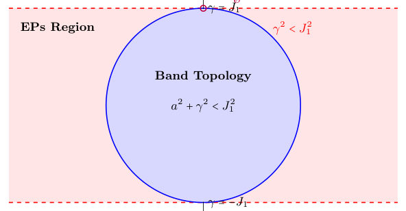
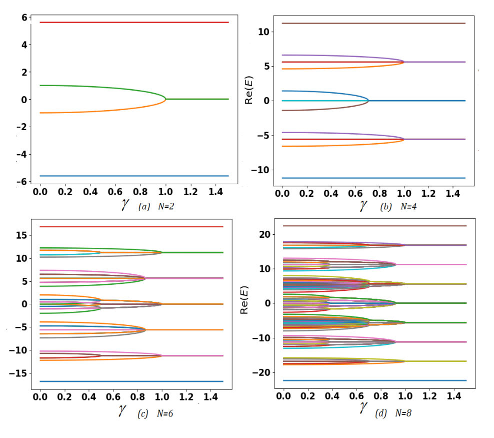
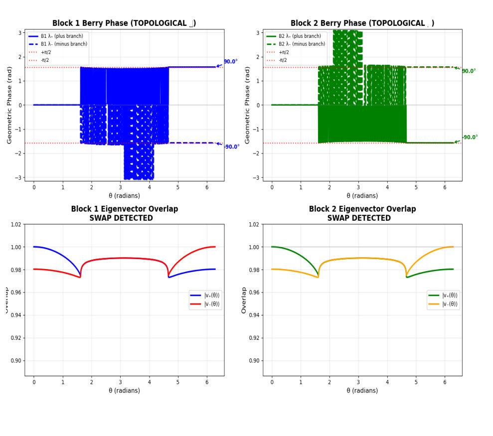
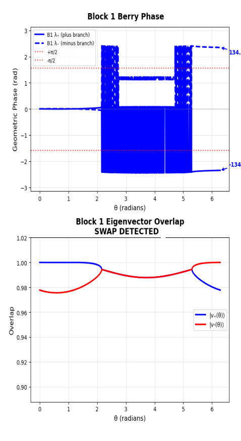
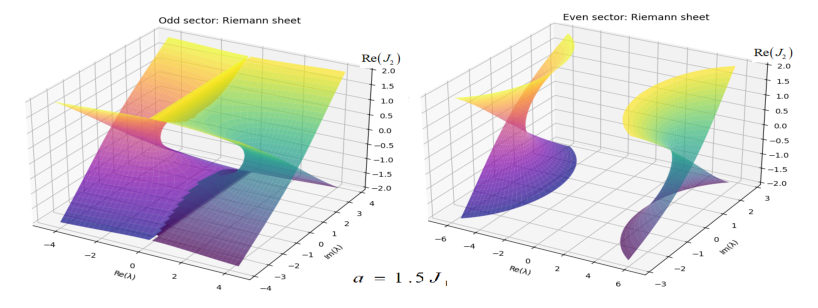
Summary. This paper proposes using the topology of Exceptional Points (EPs) in non-Hermitian Hamiltonians to create a robust computational substrate. By mapping learning onto 'braid programming' over the braid group, it replaces continuous gradient descent with discrete, topologically protected operations. This offers inherent noise immunity and is presented as a promising route for neuromorphic computing.
Why it may be interesting. This work directly connects non-Hermitian physics (EPs) with quantum computation primitives (braid gates), offering a novel physical realization pathway for topological quantum information processing relevant to AMO systems.
Main problem. The work aims to overcome limitations of gradient-based optimization in deep learning by developing a topologically protected learning paradigm.
Main result. EP braiding provides a substrate for robust, interpretable neuromorphic computation by reformulating learning as a discrete search over the braid group.
Method. The authors derive topological invariants and use adiabatic encirclements around Exceptional Points (EPs) to generate a universal set of quantum gates.
Model / system. The framework utilizes a non-Hermitian Bogoliubov-de Gennes Hamiltonian, which is analyzed by mapping the system dynamics onto quasiparticle excitations.
Key observables. State-swap fidelity and normalized Berry phase are used as quantized topological invariants characterizing EPs.
Important parameters / regimes. The topological region $R_{Topo} = \{(\gamma, J_1, a) \mid \gamma^2 < J_2 1 \vee a = 0\}$ defines the operational regime for robust computation.
Assumptions / limitations. The core assumption is that non-Abelian holonomies generated by EP braiding provide inherent noise immunity and prevent catastrophic forgetting.
Figures summary. Not specified, but the notes mention a table summarizing braid words discovered by genetic search, linking target gates to specific braid words and fidelities.
Paper structure. The paper progresses from identifying the limitations of classical optimization to introducing EP braiding as a physical mechanism. It derives the topological map, establishes the universal gate set via adiabatic processes, and finally reformulates learning as braid programming using genetic search proof-of-concept results.
We present a framework for topological learning based on exceptional point (EP) braiding in a non-Hermitian Bogoliubov-de Gennes Hamiltonian. A closed algebraic equation for the EP super-surface is derived; through momentum quantisation in finite systems, it predicts the exact number and parameter positions of all EPs in real space, irrespective of system size. The EP topology is characterised by two quantised invariants the state-swap fidelity and the normalised Berry phase which cannot both be zero for a topological EP. A complete topological map shows that all EPs lie within a specefic region. Adiabatic encirclements confirm robust state swapping and yield a universal set of braid gates, including Pauli-X, Pauli-Y, Pauli-Z, a Hadamard-like gate, the T-gate, and a SWAP operation, with the special case where a is 0, providing additional phase gates. Building on these generators, we reformulate learning as braid programming a discrete search over the braid group that replaces gradient descent on continuous weights with combinatorial optimisation. A proof-of-concept genetic search successfully discovers short braid words that reproduce the standard Hadamard gate and the H.Z gate with perfect fidelity. This paradigm offers inherent noise immunity, catastrophic-forgetting prevention through compositional concatenation, and guaranteed generalisation by mathematical construction, establishing EP braiding as a promising substrate for robust, interpretable, and topologically protected neuromorphic computation.
Authors: Malay Marut Das, Mark A. Novotny, Yaroslav Koshka
Type: theory · Category: quantum information and computing · PDF: https://arxiv.org/pdf/2608.14941v1
Analysis basis: full PDF text, analyzed in chunks
Topic relevance: quantum measurements 3/5 · driven-dissipative phase transition 2/5 · methods for driven-dissipative 2/5 · Full counting statistics 1/5 · Keldysh / 2PI / non-Gaussian methods 1/5 · analog quantum simulation 1/5 · correlated / nonlocal dissipation 1/5 · non-equilibrium universality 1/5
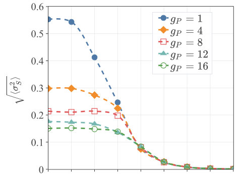
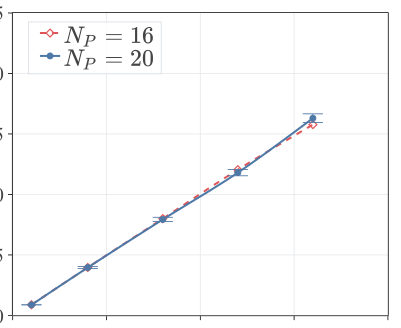
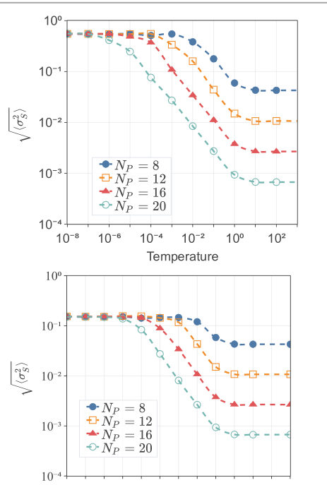
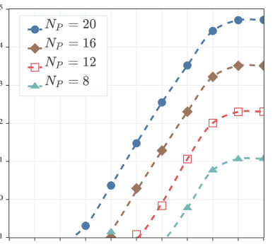
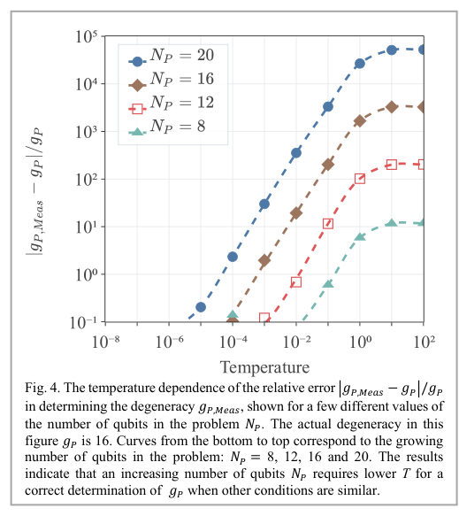
Summary. The paper introduces a novel quantum algorithm to count the number of global minima in hard optimization problems without needing to find any individual minimum. It achieves this by measuring only a small probe system's decoherence, leveraging a theoretical link between this measure and the problem's degeneracy. The results demonstrate its feasibility on random-energy Hamiltonians, offering a scalable approach for quantum computation.
Why it may be interesting. This work provides a concrete, resource-efficient quantum protocol that bypasses the exponential scaling of full system tomography by encoding complex combinatorial counts into measurable decoherence properties of a small ancillary system.
Main problem. The core problem is determining the degeneracy (number of global optima) of a classical optimization problem, which is known to be #P-hard.
Main result. A novel algorithm ($ ext{CTPQ}_{ ext{sd}#}$) was developed that estimates this degeneracy by measuring only a small probe system ($S$), circumventing the need for full Hilbert space tomography.
Method. The method exploits a perturbative relationship between the decoherence measure of the small probe $S$ and the ground-state degeneracy of the large problem Hamiltonian $H_P$, when the combined system is prepared in a Canonical Thermal Pure Quantum (CTPQ) state.
Model / system. The algorithm applies to classical optimization problems encoded by diagonal random-energy Hamiltonians, modeled as an interaction between a small probe ($S$) and the large problem environment ($P$).
Key observables. Decoherence measure ($\sigma_S$), thermalization measure ($\delta_S$), and the estimated ground-state degeneracy ($g_{P, ext{Meas}}$).
Important parameters / regimes. Temperature ($T$), energy range ($R$), problem size ($N_P$), and a user-defined energy tolerance ($\Delta g_P$).
Assumptions / limitations. The method relies on the existence of a perturbative relation in the low-temperature limit, and simulations are restricted to classical (diagonal) Hamiltonians.
Figures summary. Figures illustrate the temperature dependence of the absolute error for approximate degeneracy counting, revealing a two-threshold regime ($T_2 < T < T_1$), alongside plots showing decoherence ($\sigma_S$) vs. temperature.
Paper structure. The paper introduces the $ ext{CTPQ}_{ ext{sd}#}$ algorithm based on theoretical relations derived from open quantum systems, demonstrates its application to diagonal random-energy Hamiltonians via numerical simulation, and systematically analyzes parameter dependence (temperature, energy range) to establish operational thresholds for counting.
Counting the global optima of a classical optimization problem is a #P-hard task. We develop the canonical thermal pure quantum (CTPQ) state-based degeneracy counting (CTPQsd#) algorithm that determines the number of global optima of a classical optimization problem P by measuring only a small probe S, without finding individual minima. The method exploits a perturbative relation between the decoherence measure of S and the degeneracy of P when S and P are together in a CTPQ state. We provide the first numerical demonstration that this relation can be used to count the global minima, applying it to problems encoded by diagonal random-energy Hamiltonians as a maximally unstructured testbed for classical binary optimization problems. Classical simulations of up to 20 problem qubits quantify the algorithm's sensitivity to variations in the temperature of the CTPQ state, the Hamiltonian energy range, the problem size, and degeneracy. We establish the temperature threshold for determining the exact degeneracy and identify a second, lower threshold that provides a temperature window to count near-degenerate minima within a user-defined energy tolerance. By confining measurement to S, the protocol replaces tomography over the exponentially large problem Hilbert space with tomography over a small probe represented by only four qubits.
Authors: Sreemayee Aditya, Xhek Turkeshi, Piotr Sierant
Type: theory · Category: statistical mechanics · PDF: https://arxiv.org/pdf/2608.15197v1
Analysis basis: full PDF text, analyzed in chunks
Topic relevance: methods for driven-dissipative 3/5 · non-equilibrium universality 3/5 · driven-dissipative phase transition 2/5 · analog quantum simulation 1/5 · correlated / nonlocal dissipation 1/5 · quantum measurements 1/5 · scars & prethermalization 1/5
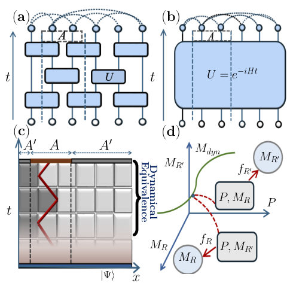
Summary. The paper proves a profound 'dynamical resource equivalence' principle, demonstrating that various measures of nonclassicality are not independent under chaotic or random unitary evolution. By analyzing diagnostics quadratic in the state, the authors show that these resources can be largely reconstructed from just a few common dynamical variables, revealing an emergent simplification in complex quantum dynamics.
Why it may be interesting. This work provides deep insight into how complex many-body dynamics simplify; the finding that seemingly distinct quantum resources collapse onto a few common dynamical degrees of freedom is highly relevant for understanding scrambling in strongly interacting systems.
Main problem. The research investigates whether distinct quantum resource measures, which characterize nonclassicality, evolve independently under generic ergodic dynamics.
Main result. It is shown that these different resource measures become mutually interdependent and are governed by a few common dynamical degrees of freedom when considering quadratic state diagnostics. This equivalence extends from random circuits to chaotic Hamiltonian evolution.
Method. The analysis uses the R\'enyi-2 relative-entropy formalism applied to various quantum resources (coherence, asymmetry) under dynamics simulated by Haar-random circuits, Floquet operators, and continuous Hamiltonians.
Model / system. The study considers a chain of L qubits evolving via three ergodic dynamics: Haar-random brick-wall circuits, the Kicked Ising Model (KIM), and the Mixed-Field Ising Model (MFIM) Hamiltonian. The diagnostics are applied to subsystem A.
Key observables. Purity ($P$), Coherence ($C_d$), Imaginarity ($I( ho_A)$), and various Asymmetries ($\Delta S_G$).
Important parameters / regimes. The analysis is sensitive to the strength of scrambling, which dictates the emergence of dynamical equivalence.
Assumptions / limitations. Key derivations rely on approximating the full spectral dynamics by its leading one-wall mode component, particularly in the context of Haar randomness.
Figures summary. Figures illustrate 'Dynamical Equivalence' showing how different resource measures are linked through common trajectories in state space for random circuits and Hamiltonian systems. Figure 7 specifically shows reconstruction across three ergodic dynamics.
Paper structure. The paper establishes a general framework by analyzing the evolution of quadratic diagnostics under various ergodic settings (random, Floquet, continuous). It derives specific mathematical relations showing that multiple resource measures can be reconstructed from just two or three fundamental quantities like purity and one other witness.
Quantum resource theories characterize distinct forms of nonclassicality in many-body quantum states, raising the question of whether these resources evolve independently under generic ergodic dynamics. Considering diagnostics quadratic in the state, we show that the dynamics of different resource measures become mutually interdependent and are governed by a few common degrees of freedom. For Haar-random circuits, the purity together with a single resource witness suffices to reconstruct the remaining resource measures, as we demonstrate for coherence, various asymmetries, and number entropies. The same relations hold, to a good approximation, under chaotic Floquet and continuous-time Hamiltonian dynamics, establishing that this dynamical resource equivalence extends beyond random circuits. We further derive an exact coherence--imaginarity relation, remarkably accurate also beyond Haar-random circuits. Our results reveal an emergent simplification of many-body dynamics, in which sufficiently strong scrambling reduces seemingly distinct quantum resources to a few common dynamical degrees of freedom.
Authors: Kenneth A. Lin, Unmesh Ghorai, Kenji Watanabe, Takashi Taniguchi, Emanuel Tutuc, Rafi Bistritzer
Type: both · Category: strongly correlated electrons · PDF: https://arxiv.org/pdf/2608.14805v1
Analysis basis: full PDF text, analyzed in chunks
Topic relevance: Keldysh / 2PI / non-Gaussian methods 3/5 · analog quantum simulation 2/5 · driven-dissipative phase transition 2/5 · methods for driven-dissipative 2/5 · correlated / nonlocal dissipation 1/5 · non-equilibrium universality 1/5 · quantum measurements 1/5
Summary. This work demonstrates that charge transfer in closely spaced graphene double layers is a complex many-body process driven by the interplay between capacitive charging and various exchange interactions. By analyzing tunneling spectroscopy, the authors identify spectroscopic signatures corresponding to phase transitions where interlayer coherence allows for gradual, rather than abrupt, electronic rearrangement. This establishes interlayer tunneling as a sensitive probe of interacting quantum systems.
Why it may be interesting. The concept of charge transfer being mediated by coherent intermediate phases stabilized by interlayer exchange is highly relevant for understanding correlated electron behavior in nanoscale heterostructures, bridging concepts from quantum optics/open systems into solid-state physics.
Main problem. The study investigates how charge transfer occurs in closely spaced graphene double layers, arguing that it is governed by interaction-driven phase transitions rather than simple single-particle physics.
Main result. Interlayer tunneling reveals a competition between capacitive charging and exchange interactions; specifically, interlayer exchange stabilizes coherent intermediate phases enabling gradual charge transfer, while intralayer exchange favors abrupt polarization.
Method. The authors combine theoretical minimization of an effective Hamiltonian (Hartree-Fock approximation) with the analysis of experimental tunneling spectroscopy data ($dI/dV$).
Model / system. The system is a closely spaced graphene double layer quantum Hall ferromagnet. The physics is modeled by minimizing an energy functional that includes terms for electrostatic charging, intralayer exchange ($\Gamma_A$), and interlayer exchange ($\Gamma_m^2$).
Key observables. Tunneling conductance ($g_{Int}$) as a function of interlayer bias ($V_{Int}$), which exhibits non-monotonic behavior marking phase transitions.
Important parameters / regimes. Interlayer separation ($d \approx 1.8$ nm); the competition between charging, intralayer exchange, and interlayer exchange energies; applied interlayer bias ($V_{Int}$).
Assumptions / limitations. The analysis relies on the Hartree-Fock approximation for determining ground state occupations and uses a perturbative approach for calculating tunneling current in coherent sectors.
Figures summary. Figures show $g_{Int}$ vs. gate voltages indicating LL filling oscillations, and critically, non-monotonic kinks in $I_{Int}/g_{Int}$ vs. $V_{Int}$ at $ ext{V}_{Int} \approx \pm 20 ext{ mV}$, which signal the interaction-driven transitions.
Paper structure. The paper develops the theoretical framework by defining the energy functional based on competing interactions, analyzes the ground state evolution through different bias regimes (coherent vs. polarized), and uses this theory to interpret spectroscopic signatures observed in tunneling measurements.
Charge transfer between two conductors is conventionally viewed as a single-particle process governed by electrostatics and band alignment. Using tunneling spectroscopy, we show that charge transfer in closely spaced graphene double layer quantum Hall ferromagnets instead proceeds through a sequence of interaction driven phase transitions governed by the competition between capacitive charging and Coulomb exchange interactions. A comparison of experimental data and theoretical calculations identifies spectroscopic signatures of the interaction driven charge transfer transitions, and reveals that this charge transfer reconstructs the quasiparticle spectrum. While intralayer exchange favors abrupt transfer of entire spin-valley subbands between the layers, interlayer exchange stabilizes coherent intermediate phases that enable gradual charge transfer. Our results establish interlayer tunneling as a powerful probe of interacting electronic systems whose quasiparticle spectrum is itself bias dependent.
Authors: Hui-Huang Chen
Type: theory · Category: statistical mechanics · PDF: https://arxiv.org/pdf/2608.15467v1
Analysis basis: full PDF text, analyzed in chunks
Topic relevance: non-equilibrium universality 3/5 · driven-dissipative phase transition 2/5 · quantum measurements 2/5 · Full counting statistics 1/5 · analog quantum simulation 1/5 · correlated / nonlocal dissipation 1/5 · methods for driven-dissipative 1/5 · scars & prethermalization 1/5
Summary. This theoretical work investigates how local measurements project a complex many-body wavefunction into statistical ensembles at quantum critical points. The authors derive that the resulting overlap moments follow a universal nonlinear hierarchy whose scaling exponents are surprisingly independent of system parameters like the Luttinger constant. This is achieved by mapping the problem onto Boundary Conformal Field Theory, providing deep structural insights into quantum state randomness.
Why it may be interesting. The discovery of parameter-independent scaling exponents ($\Gamma_k$) for higher moments provides a powerful diagnostic tool for characterizing quantum criticality in interacting systems, linking local measurements to deep CFT structures.
Main problem. To determine the universal structure of higher overlap moments (frame potentials) within the projected ensemble generated by local measurements on a quantum many-body state at equilibrium quantum criticality.
Main result. The higher overlap moments form a universal nonlinear hierarchy whose leading scaling exponent is independent of the continuously varying Luttinger parameter, suggesting deep underlying universality.
Method. The analysis employs advanced Conformal Field Theory (CFT) techniques in replica space, combined with numerical verification using Matrix Product States (MPS) and free fermion calculations.
Model / system. The study focuses on the Tomonaga-Luttinger liquid (TLL) at quantum criticality, modeled by a compact boson CFT. The results are tested against the XXZ spin chain Hamiltonian in its critical phase.
Key observables. Frame potential scaling exponents ($\Gamma_k$), overlap moments ($F_k(U)$), and conformal weights derived from replica boundary conditions (BC/BU).
Important parameters / regimes. Luttinger parameter ($K$), moment order ($k$), system size ($L$), and anisotropy ($\Delta$) of the XXZ chain.
Assumptions / limitations. The analysis relies on CFT methods, assuming a low-energy description by the compact boson CFT. The full potential calculation requires determining remaining compact contributions.
Figures summary. Figures illustrate replica geometry (seams, folding) and map the problem to Boundary Conformal Field Theory (BCFT) insertions, while other figures show numerical confirmation of scaling laws derived from ratios $R_k$.
Paper structure. The paper progresses by defining the moment operator, mapping the problem onto a folded half-cylinder geometry in BCFT, calculating the resulting spectrum via principal angles and monodromy analysis, and finally confirming the universal exponent $\Gamma_k$ using both analytical continuation and numerical simulations on the XXZ chain.
Local measurements transform a many body wavefunction into a statistical ensemble of conditional quantum states. In chaotic systems, the higher moments of such ensembles diagnose the emergence of quantum state randomness, but their structure at equilibrium quantum criticality is largely unknown. Here we show that the projected ensemble of a Tomonaga-Luttinger liquid exhibits a universal nonlinear hierarchy of state overlap moments. Remarkably, the leading scaling exponents are independent of the continuously varying Luttinger parameter. Replica boundary conformal field theory reveals a geometric origin: outcome locking combines the active replica swaps into a single collective rotated sector, while intersecting compact replica branes eliminate the leading interaction dependent zero mode contribution. Matrix product state calculations across the interacting XXZ critical phase and direct free fermion calculations independently confirm the interaction independence and nonlinear hierarchy.
Authors: Zizheng Li, Harmen Smedes, Bruno Lopez-Rodriguez, Thomas Scholte, Simon Groeblacher, Iman Esmaeil Zadeh
Type: experiment · Category: other · PDF: https://arxiv.org/pdf/2608.15936v1
Analysis basis: full PDF text, analyzed in chunks
Topic relevance: interference shaping light 3/5 · quantum optics experiment 3/5 · analog quantum simulation 2/5 · QC/QI experiment 1/5 · driven-dissipative phase transition 1/5 · methods for driven-dissipative 1/5
Summary. This work introduces a breakthrough monolithic platform by integrating amorphous silicon carbide ($ ext{a-SiC}$) waveguides onto bulk lithium niobate ($ ext{LiNbO}_3$). This approach bypasses the high cost and complexity of traditional thin-film $ ext{LiNbO}_3$ processing, enabling scalable, low-loss photonic circuits. The platform achieves record electro-optic tuning efficiency and demonstrates advanced control over light dispersion using Photonic Crystal structures.
Why it may be interesting. While the core topic is photonics engineering rather than fundamental quantum theory, the precise control over light confinement, dispersion engineering (via PhCs), and electro-optic modulation efficiency ($ ext{V}_\pi ext{L}$) are crucial enabling technologies for future quantum photonic circuits and quantum information processing.
Main problem. The primary challenge is developing scalable, cost-effective, high-density photonic integrated circuits using lithium niobate while circumventing the fabrication difficulties and high costs associated with traditional thin-film $ ext{LiNbO}_3$ processing.
Main result. The authors demonstrate a fully monolithic platform ($ ext{a-SiC}$ on bulk $ ext{LiNbO}3$) that achieves record high electro-optic tuning efficiency ($ ext{V}\pi ext{L} = 2.87 ext{ V}\cdot ext{cm}$) and shows an $8.5$-fold enhancement via slow-light effects.
Method. The approach involves depositing amorphous silicon carbide ($ ext{a-SiC}$) onto a bulk $ ext{LiNbO}_3$ substrate using CMOS-compatible processes, allowing for the patterning of waveguides and photonic crystal structures in $ ext{a-SiC}$ while retaining high performance from the underlying bulk crystal.
Model / system. The physical system is an integrated photonics chip built on a bulk lithium niobate ($ ext{LiNbO}_3$) substrate, utilizing amorphous silicon carbide ($ ext{a-SiC}$) for patterning and light guiding. The platform supports various devices including microring resonators, racetrack resonators, and Photonic Crystal (PhC) structures.
Key observables. Electro-optic tuning efficiency ($ ext{V}_\pi ext{L}$), propagation loss ($1.3 ext{ dB/cm}$), thermo-optic tuning slope ($39.54 ext{ pm/K}$), and the achievable slow-light enhancement factor.
Important parameters / regimes. The process operates below $300^\circ ext{C}$, ensuring CMOS compatibility; key parameters include waveguide dimensions, lattice constants for PhCs, and the electro-optic coefficients of $ ext{LiNbO}_3$.
Assumptions / limitations. The fabrication process assumes that patterning in $ ext{a-SiC}$ does not significantly degrade the optical properties or structure of the underlying bulk $ ext{LiNbO}_3$ crystal.
Figures summary. Figures detail the multi-step, CMOS-compatible fabrication flow ($ ext{a-SiC}$ deposition, RIE patterning, metal liftoff) and show SEM cross-sections of the resulting waveguides. Other figures illustrate characterization results for resonance dips, thermal tuning, and electro-optic responses.
Paper structure. The paper details the novel monolithic $ ext{a-SiC}/ ext{LN}$ fabrication flow, presents measurements of passive components (resonators) showing low loss, characterizes active devices like PhC-based MZIs for high EO tunability, and discusses leveraging slow-light effects via PhCs.
Functional electro-optic (EO) tunable photonic integrated circuits are crucial to next-generation information processing and advanced computing, where ferroelectric materials such as lithium niobate (LiNbO3) provide outstanding optical properties and versatile tuning mechanisms. However, beyond achieving high-performance devices, practical deployment of LiNbO3 photonic integrated circuits requires rapid and cost-effective scale-up, which remains challenging because of the fabrication complexity and high costs of ion-sliced thin-film lithium niobate and wafer bonding processes. To address this gap, we demonstrate a fully monolithic photonic platform, amorphous silicon carbide (a-SiC) on bulk LiNbO3 crystal substrate, enabling scalable, CMOS-compatible, low-cost, and high-density photonic integrated circuits without relying on thin-film LiNbO3. This integration approach breaks the long-standing cost-performance-scalability tradeoff, and intrinsically eliminates the need for sophisticated fabrication processes, including ion slicing, wafer bonding, and LiNbO3 etching. It realizes high-density, low-loss, and record high EO tuning efficiency of VpiL = 2.87 Vcm on bulk LiNbO3 crystal substrate. Furthermore, leveraging slow-light effect near photonic crystal bandgap, an 8.5-fold EO tuning efficiency enhancement is achieved, highlighting the platform's capability in confinement control and dispersion engineering.
Authors: Nuo Xu, Shaohua Chen
Type: theory · Category: disordered systems and neural networks · PDF: https://arxiv.org/pdf/2608.15570v1
Analysis basis: full PDF text, analyzed in chunks
Topic relevance: methods for driven-dissipative 3/5 · Keldysh / 2PI / non-Gaussian methods 2/5 · analog quantum simulation 2/5 · quantum measurements 2/5 · driven-dissipative phase transition 1/5 · non-equilibrium universality 1/5
Summary. This paper introduces a Neural-Embedded Graphical Model (NEGM) to solve multiscale problems in composite materials. NEGM unifies disparate modeling approaches by encoding local physics into neural networks organized on a graph structure. This allows for seamless, progressive upscaling from microscale to macroscale without complex interfacing protocols.
Why it may be interesting. While focused on classical solid mechanics, the core methodology—using ANNs to create scale-invariant surrogates for complex physics—is highly relevant to developing machine learning tools for quantum many-body simulations or open quantum system dynamics where traditional solvers struggle with scale separation.
Main problem. The primary challenge is bridging the vast disparity between microstructural length scales and macroscopic component sizes in computational physical modeling.
Main result. The proposed Neural-Embedded Graphical Model (NEGM) provides a unified, scale-invariant framework for progressive upscaling of complex composites by relying solely on neural network inference.
Method. It reformulates multiscale PDE solving by encoding local physics into small, trainable neural network blocks organized within a global hypergraph structure.
Model / system. The model targets highly heterogeneous composite materials exhibiting strong nonlinearity and arbitrary boundary conditions. It simulates physical responses governed by PDEs like the Poisson equation for heat conduction.
Key observables. Physical responses such as temperature fields (T) and heat flux vectors (q).
Important parameters / regimes. Material properties, conductivity tensor lambda(x), and characteristic length scales.
Assumptions / limitations. The model assumes that the physical behavior can be accurately approximated by constituent neural network blocks trained on local data.
Figures summary. Figures illustrate the process flow from a triangular mesh to a graph structure, detailing how elementary ANNs map temperature to heat flux within each element.
Paper structure. The paper introduces NEGM as a unified framework that decouples geometry (graph) from constitutive behavior (ANNs). It details the loss function combining BC enforcement, energy conservation, and physical consistency checks for training.
A persistent challenge in computational physical modeling is the substantial disparity between the characteristic length scales of microstructures and macroscopic structural components. Multiscale modeling has been widely adopted to bridge this gap by coupling methodologies tailored to different scales. However, conventional approaches, such as asymptotic homogenization (bottom-up) and submodeling (top-down), often entail rigorous mathematical prerequisites or intricate interfacing procedures. To address these limitations, we introduce a fully scalable neural-embedded graphical model (NEGM) that provides a unified framework for the progressive upscaling of highly heterogeneous composite materials. Specifically, NEGM encodes all microstructure- and material-related complexities into constituent neural network blocks, which are then organized into a hypergraph to simulate progressively larger domains. Extensive numerical benchmarks demonstrate that NEGM reliably predicts the physical responses of 2D and 3D composites exhibiting strong material nonlinearity, arbitrary boundary conditions, and irregular geometries. Crucially, because NEGM relies solely on neural network training and inference, it offers a scale-invariant formulation. This enables iterative application of NEGM to upscale from the microscale to arbitrarily large scales, circumventing the need for complex interfacing protocols between disparate modeling frameworks. We validate this progressive upscaling strategy on a large mosaic composite domain, showing that the accumulated error can be effectively contained provided the constituent blocks achieve sufficiently high prediction accuracy. Our findings suggest that artificial neural networks not only enhance the efficiency of direct single-scale simulations, as previously demonstrated, but also provide a clean and elegant pathway toward streamlined multiscale modeling.
Authors: Hesam Arabzadeh, Brad Lee Holian
Type: theory · Category: statistical mechanics · PDF: https://arxiv.org/pdf/2608.15371v1
Analysis basis: full PDF text, analyzed in chunks
Topic relevance: methods for driven-dissipative 3/5 · non-equilibrium universality 3/5 · driven-dissipative phase transition 2/5 · Keldysh / 2PI / non-Gaussian methods 1/5 · correlated / nonlocal dissipation 1/5 · scars & prethermalization 1/5
Summary. The paper details the use of a novel Nonequilibrium Molecular Dynamics (NEMD) technique, called the Maxwell-Demon method, to measure shear viscosity in a fluid. By analyzing the balance between mechanical work supplied by the driving force and heat removed by the thermostat, the authors confirm consistency across multiple theoretical routes. The methodology is robustly validated through finite-size scaling, allowing for reliable extrapolation of transport properties to the true hydrodynamic limit.
Why it may be interesting. This work provides a sophisticated computational tool—the Maxwell-Demon method—for calculating transport coefficients in non-equilibrium regimes, which is highly relevant for understanding energy dissipation and irreversible processes in complex quantum or classical many-body systems.
Main problem. The primary goal is to accurately measure the shear viscosity of a fluid using Non-Equilibrium Molecular Dynamics (NEMD) simulations.
Main result. The Maxwell-Demon method successfully establishes a consistent, direct route for calculating shear viscosity by comparing estimates derived from momentum diffusion, mechanical work balance, and entropy production. Furthermore, the simulation demonstrates that the calculated viscosity approaches an asymptote in the hydrodynamic limit with system size scaling as $1/\sqrt{N}$.
Method. The authors employ a Maxwell-Demon technique to drive the fluid into a Non-Equilibrium Steady State (NESS) by maintaining opposing average particle velocities across two regions. Viscosity is then calculated by analyzing energy/momentum balance equations derived from this non-equilibrium driving.
Model / system. The study uses a Lennard-Jones (LJ) fluid simulated in a periodic cell geometry, which is divided into two distinct regions to impose the shear flow necessary for the NEMD simulation.
Key observables. Shear viscosity ($ u$ or $\eta$), mechanical work done by the Demon, heat removed by the thermostat, and the time/space evolution of the velocity profile (parabolic vs. sinusoidal).
Important parameters / regimes. The system size ($N$) is varied to extrapolate results to the hydrodynamic limit; the imposed driving velocity amplitude ($u_p$) and cell width ($w$) are key parameters.
Assumptions / limitations. Key assumptions include that the NESS profile can be accurately modeled by a piecewise parabolic form, and that the relaxation dynamics follow simple exponential decay modes for comparison.
Figures summary. Figures illustrate the consistency between work-derived and entropy-derived viscosity estimates (e.g., within 0.6%), show the dependence of $ u(0)$ on system size ($1/\sqrt{N}$ scaling), and plot the strain rate dependence ($ u(\gamma)$) to confirm shear thinning.
Paper structure. The paper introduces the Maxwell-Demon NEMD framework for calculating transport coefficients, details the methodology by comparing work/entropy routes, presents results showing consistency across different profile assumptions (parabolic vs. sinusoidal), and concludes with finite-size scaling analysis to extrapolate to the true hydrodynamic limit.
We present a Maxwell-Demon nonequilibrium molecular dynamics method for measuring the shear viscosity of a Lennard-Jones fluid. The simulation cell is divided into two regions of width $w$ in the $x$-direction, with particles free to move between the two sides. The Demon maintains equal and opposite regional average particle velocities in the $y$-direction ($\pm u_p$), by applying an acceleration $g_{total}$ that includes both total force balance and a correction for diffusion of particles across boundaries. The momentum relaxation rate needed to sustain the nonequilibrium steady state (NESS) is $γ=g_{total}/u_p$. We show that the driven velocity profile is not imposed point-wise in $x$ by the constraint, but is selected by the regional hydrodynamic response of the fluid. For this shear geometry, the measured NESS profile in Eulerian slabs is well represented by a piecewise parabolic form, reminiscent of planar Poiseuille flow. The parabolic profile estimates the kinematic viscosity from work done on the shearing fluid, $ν_{para}=γ_{total}w^2/12$, as well as an entropy production estimate, derived from heat removal by the Nosé--Hoover thermostat that keeps each regional average temperature constant. For a representative run, the work and entropy routes agree to within $0.6\%$, confirming consistency between the mechanical work supplied by the Demon and the heat removed by the thermostat. Once NESS driving is removed, the parabolic velocity profile relaxes exponentially rapidly to sinusoidal, the natural transverse momentum-diffusion eigenmode. These results establish the Maxwell-Demon shear method as a direct NEMD route for obtaining shear viscosity from momentum diffusion, work, and entropy balances. Our results in 3D for increasing system size $N$ (the number of particles) demonstrate that shear viscosity approaches an asymptote (the hydrodynamic limit) as $1/\sqrt{N}$.
Authors: Ryan Buechele, Joseph Szabo, Nandini Trivedi
Type: theory · Category: quantum information and computing · PDF: https://arxiv.org/pdf/2608.16674v1
Analysis basis: full PDF text, analyzed in chunks
Topic relevance: analog quantum simulation 3/5 · scars & prethermalization 3/5 · non-equilibrium universality 2/5 · correlated / nonlocal dissipation 1/5 · quantum measurements 1/5
Summary. The authors present a minimal spin chain model coupled to an ancilla qubit whose coupling strength ($\lambda$) acts as a control knob. By tuning $\lambda$, the system undergoes a controlled crossover from rapid, scrambling dynamics to slow operator confinement. This work is significant because it shows that such fundamentally different quantum behaviors can emerge from a single Hamiltonian structure.
Why it may be interesting. This work provides a clean, controllable platform to study fundamental transitions between chaotic/scrambling behavior and localized/confined dynamics using an engineered auxiliary degree of freedom, which is highly relevant for understanding quantum computation error correction or simulation protocols.
Main problem. The study investigates how tuning an auxiliary qubit coupling can induce a crossover between fast, super-ballistic quantum scrambling and slow, sub-ballistic operator confinement in a time-independent Hamiltonian system.
Main result. The model successfully demonstrates this transition within a single Hamiltonian family by controlling the ancilla coupling strength ($\lambda$), revealing an effective hidden symmetry responsible for confinement at strong coupling.
Method. The analysis employs advanced quantum information diagnostics, including Von Neumann entropy, Mutual Information, and Out-of-Time-Order Correlators (OTOCs), alongside perturbative techniques like Feshbach-Fano projection.
Model / system. The system is a mixed-field Ising spin chain coupled to a single spin-1/2 ancilla qubit. The Hamiltonian includes local interactions ($J$) and the tunable coupling ($\lambda$) between the ancilla and the chain's magnetization.
Key observables. Von Neumann entropy, Mutual Information saturation time, Out-of-Time-Order Correlator (OTOC) growth rate ($\log \alpha$), and state spread in Hilbert space.
Important parameters / regimes. The dimensionless ancilla coupling strength $\lambda$ acts as the primary tuning parameter controlling the dynamics between scrambling and confinement.
Assumptions / limitations. The analysis contrasts emergent non-Hermitian dynamics (from tracing out the ancilla) with the closed, unitary dynamics of the isolated chain.
Figures summary. Figure 1 schematically shows the system and demonstrates how state spread changes from filling full space (weak $\lambda$) to being confined to specific subspaces like SU(2) Dicke states (strong $\lambda$).
Paper structure. The paper introduces the model, analyzes dynamics in different regimes ($\lambda$ weak vs. strong), quantifies the crossover using information measures (Mutual Information peak, OTOC suppression), and theoretically derives the confinement mechanism via symmetry arguments.
We demonstrate a static, disorder-free spin chain Hamiltonian which, by tuning the coupling to an auxiliary qubit, realizes a crossover between super-ballistic, ancilla-accelerated scrambling and sub-ballistic operator confinement. Our minimal model is the mixed-field Ising chain with a spin-1/2 ancilla coupled to its longitudinal magnetization. The ancilla mediates an effective all-to-all interaction which accelerates operator spreading and entanglement growth when weakly coupled, but rapidly saturates its entanglement and projects spin chain operators into effectively frozen subspaces when the ancilla coupling is strong. We locate this crossover independently through both a divergent peak in the mutual-information saturation time near $λ_c N/h \approx 8$ and an exponential suppression of the late-time OTOC growth rate, $\logα\propto 1/λ$. Through a Feshbach-Fano projection and Schrieffer-Wolff transformation, we reveal an effective hidden symmetry on the chain which confines operators on the chain for a time exponential in the coupling strength. This reconciles the fast, $\log(N)$ scrambling reported for random-unitary-circuit realizations of the star geometry with the confinement previously found in its time-independent Hamiltonian analog, showing both emerge from a single Hamiltonian family as a function of one dimensionless parameter.
← Index · ← Previous · Next →